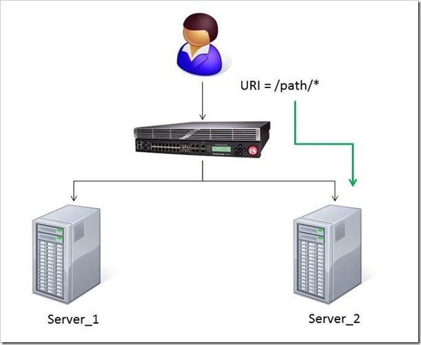
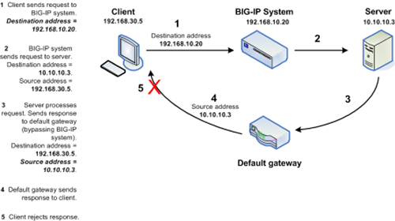
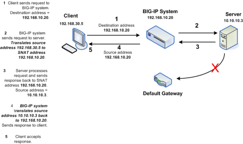
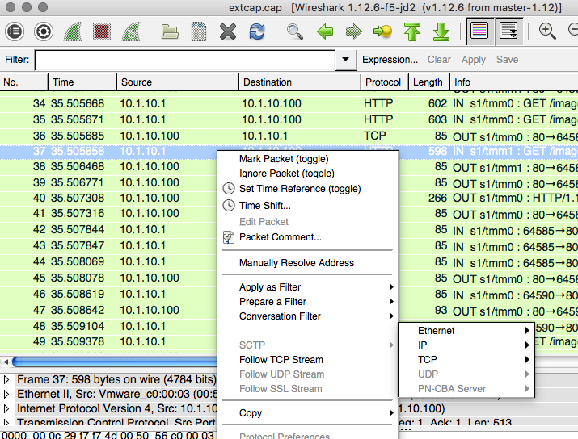
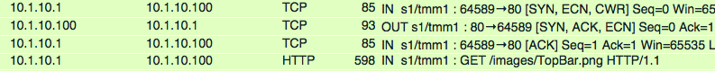
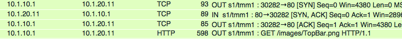

Unofficial - F5 Certification Exam Prep Material > F5 301B - BIG-IP LTM Specialist: Maintain and Troubleshoot Study Guide 11/01/19 Source | Edit on
Section 2 - Identify and Resolve Application Issues¶
Objective - 2.01 Determine which iRule to use to resolve an application issue¶
2.01 - Determine which iRule events and commands to use
https://support.f5.com/kb/en-us/products/big-ip_ltm/manuals/product/ltm-concepts-11-5-0/18.html
iRule Events and Commands
An iRule is a powerful and flexible feature within the BIG-IP operating system that you can use to manage your network traffic. The iRules feature not only allows you to select pools based on header data, but also allows you to direct traffic by searching on any type of content data that you define. Thus, the iRules feature significantly enhances your ability to customize your content switching to suit your exact needs.
Important: For complete and detailed information on iRules syntax, see the F5 DevCentral web site, http://devcentral.f5.com. Note that iRules must conform to standard Tcl grammar rules; therefore, for more information on Tcl syntax, see http://tmml.sourceforge.net/doc/tcl/index.html.
An iRule is a script that you write if you want individual connections to target a pool other than the default pool defined for a virtual server. iRules allow you to more directly specify the destinations to which you want traffic to be directed. Using iRules, you can send traffic not only to pools, but also to individual pool members, ports, or URIs. The iRules you create can be simple or sophisticated, depending on your content-switching needs.
Events
iRules are event-driven, which means that the LTM system triggers an iRule based on an event that you specify in the iRule. An event declaration is the specification of an event within an iRule that causes the LTM system to trigger that iRule whenever that event occurs.
In a basic system configuration where no iRule exists, Local Traffic Manager directs incoming traffic to the default pool assigned to the virtual server that receives that traffic. However, you might want Local Traffic Manager to direct certain kinds of connections to other destinations. The way to do this is to write an iRule that directs traffic to that other destination, contingent on a certain type of event occurring. Otherwise, traffic continues to go to the default pool assigned to the virtual server.
iRules are therefore evaluated whenever an event occurs that you have specified in the iRule. For example, if an iRule includes the event declaration CLIENT_ACCEPTED, then the iRule is triggered whenever Local Traffic Manager accepts a client connection. Local Traffic Manager then follows the directions in the remainder of the iRule to determine the destination of the packet.
when CLIENT\_ACCEPTED {
if { [IP::addr [IP::client\_addr] equals 10.10.10.10] } {
pool my\_pool
}
}
This iRule is triggered when a client-side connection has been accepted, causing Local Traffic Manager to send the packet to the pool my_pool, if the client’s address matches 10.10.10.10.
For a full list of possible events see the following link:
https://devcentral.f5.com/wiki/irules.Events.ashx
2.01 - Given a specific iRule event determine what commands are available
https://support.f5.com/kb/en-us/products/big-ip_ltm/manuals/product/ltm-concepts-11-5-0/18.html
iRule Commands
An iRule command within an iRule causes Local Traffic Manager to take some action, such as querying for data, manipulating data, or specifying a traffic destination. The types of commands that you can include within iRules are:
Statement commands
These commands cause actions such as selecting a traffic destination or assigning a SNAT translation address. An example of a statement command is pool <name>, which directs traffic to the named load balancing pool.
Commands that query or manipulate data
Some commands search for header and content data, while others perform data manipulation such as inserting headers into HTTP requests. An example of a query command is IP::remote_addr, which searches for and returns the remote IP address of a connection. An example of a data manipulation command is HTTP::header remove <name>, which removes the last occurrence of the named header from a request or response.
Utility commands
These commands are functions that are useful for parsing and manipulating content. An example of a utility command is decode_uri <string>, which decodes the named string using HTTP URI encoding and returns the result.
For a full list of possible commands see the following link:
https://devcentral.f5.com/wiki/iRules.Commands.ashx
Objective - 2.02 Explain the functionality of a given iRule¶
2.02 - Interpret information in iRule logs to determine the iRule and iRule events where they occurred
https://devcentral.f5.com/articles/irules-101-09-debugging
Logging with iRules
The first tool you will want to arm yourself with is the iRules “log” command. The syntax for the log is
log [<facility>.<level>] <message>
facility : "local0", "local1", "local2", "local3", "local4", "local5",
"local6", "local7"
level: "alert", "crit", "debug", "emerg", "err", "error", "info",
"none", "notice", "panic", "warn", "warning"
While the facility and level parameters are optional, it is good to know that there is a significant behavioral difference when the optional <facility>.<level> is specified. When iRule logs messages without the facility and/or level, they are rate-limited as a class and subsequently logged messages within the rate-limit period may be suppressed even though they are textually different. However, when the <facility> and/or <level> are specified, the log messages are not rate-limited (though syslog-ng will still perform suppression of repeated duplicates).
Whew, that’s a lot of options. Lucky for you all that unless you are doing some customization in syslog-ng regarding the different facilities and levels, you can stick with the defaults of “local0” and “error” which are the defaults. Actually, we’ve made it even easier than that for you, in that you can omit the level parameter and we’ll default it for you. In almost every iRule you will see on DevCentral, the following syntax is used and in 99% of the cases, it will be all that you need.
log local0. "message goes here"
This will ensure that the log messages are not rate limited and go directly to the log files and that they will be stored in the system log file: /var/log/ltm.
A practical example
What and what not to log really depends on your iRule and what you are trying to accomplish with it. If you are trying to process a HTTP request, it’s probably a good idea to log the inputs to your iRule such as HTTP::host and HTTP::uri, as well as any temporary variables you are using if processing those string values. Let’s look at the following iRule.
when HTTP\_REQUEST {
switch -glob [HTTP::uri] {
"/app1\*" {
pool app1\_pool
}
"\*.gif" -
"\*.jpg" {
pool images\_pool
}
default {
pool def\_pool
}
}
}
This seems fairly straight forward. All requests to the “/app1” application will be sent to the app1_pool pool, all files with the “.gif” and “.jpg” extensions will be routed to the images_pool pool, and all other requests will be sent to the def_pool pool. Then you go to test your application and none of the images for the app1 application are being displayed. The way to go about debugging this issue would be to log the inputs and log the decision elements of the iRules logic to determine the source of the problem.
Your first thought is to go to the webserver logs for the image servers and see why the requests are not being honored. To your surpise, the logs show no requests on the image servers. Your next obvious step is to put some debugging in your iRule to see exactly what’s going on.
when HTTP\_REQUEST {
log local0. "Request: [HTTP::uri]"
switch -glob [HTTP::uri] {
"/app1\*" {
log local0. "Sending request to app1\_pool"
pool app1\_pool
}
"\*.gif" -
"\*.jpg" {
log local0. "Sending request to images\_pool"
pool images\_pool
}
default {
log local0. "Sending request to def\_pool"
pool def\_pool
}
}
}
Then when you run your traffic, you will see something like this in the logs
Request: /app1/index.html
Sending request to app1\_pool
Request: /js/file.js
Sending request to def\_pool
Request: /app1/smile.gif
Sending request to app1\_pool
What! I thought all image files were supposed to be sent to the images_pool pool but they are being sent to the app1_pool pool. Since the condition of searching for “/app1” was before the “gif/”jpg” test, it matched and requests were sent to the app1_pool pool of servers. Now that you have this information, it’s fairly easy to reorder the conditions in the switch statement to ensure all image request go to the images_pool pool.
when HTTP\_REQUEST {
log local0. "Request: [HTTP::uri]"
switch -glob [HTTP::uri] {
"\*.gif" -
"\*.jpg" {
log local0. "Sending request to images\_pool"
pool images\_pool
}
"/app1\*" {
log local0. "Sending request to app1\_pool"
pool app1\_pool
}
default {
log local0. "Sending request to def\_pool"
pool def\_pool
}
}
}
Now to your pleasure, the images are displaying in your application. Just for kicks you look at the logs and see something like the following:
Request: /app1/index.html
Sending request to app1\_pool
Request: /js/file.js
Sending request to def\_pool
Request: /app1/smile.gif
Sending request to images\_poo
All is good, the app is working, and all images are being displayed properly. You’re done right? WRONG…
Remove Logging in Production
Debug logging is a great tool when testing your application deployments, or even when fixing an issue with production servers. But, log messages do fill up the system logs and the system disks are only so big. In most cases, debug logging should be disabled when you’ve got all the kinks worked out. This can be done in several ways:
Remove the log commands from the iRule. This is probably the easiest to implement, just delete the log lines and click save. This option will reduce the clutter in your iRule and makes it easier to read.
Comment out the log commands with a # sign. This will enable you to easily restore the log commands if another situation comes up where you need to figure out a new app error. Just uncomment the log lines, click save, and you are back in business.
Use conditional log statements based on global variables. By wrapping log statements with an if statement testing the value of a variable, you can make turning on and off logging as simple as changing a variable. The above iRule could be written like this.
when HTTP\_REQUEST { set DEBUG 1 if { $DEBUG } { log local0. "Request: [HTTP::uri]" } switch -glob [HTTP::uri] { "\*.gif" - "\*.jpg" { if { $DEBUG } { log local0. "Sending request to images\_pool" } pool images\_pool } "/app1\*" { if { $DEBUG } { log local0. "Sending request to app1\_pool" } pool app1\_pool } default { if { $DEBUG } { log local0. "Sending request to def\_pool" } pool def\_pool } } }
Then by setting DEBUG to 1 will enable logging and setting it to 0 will turn logging off. The method you use will solely depend on your own situation. Options 1 and 2 take no CPU overhead in the log processing, while option 3 still requires performing a Boolean test on a variable. For hundreds of thousands of requests, this can add up.
Wrapping it up¶
First thing to know and imprint in your mind is that logging is your friend. You should get in the habit of including some form of logging in all new iRule development to speed up diagnosing issues. Just make sure that you remember to disable those log commands when you move your iRule into production so that you keep from filling up the BIG-IP’s filesystem.
For more information on the log command see the following link:
https://devcentral.f5.com/wiki/iRules.log.ashx
2.02 - Describe the results of iRule errors
https://support.f5.com/kb/en-us/solutions/public/13000/900/sol13905.html?sr=46137011
iRule Errors
When an iRule contains an error, such as a missing variable, the system generates a TCL error indicating the missing or incorrect element. A TCL runtime error aborts the affected instance of the iRule, and may cause the associated connection to be reset. The error message can provide valuable information when creating and troubleshooting iRule syntax.
If the error message occurs during operation or while creating an iRule, use the information in the error message to troubleshoot the iRule syntax. If the error occurs after upgrading the BIG-IP system to a new software release, refer to the DevCentral site and verify whether any portion of the iRule syntax (such as an iRule command) was deprecated or changed.
Error Message
*Error Message: 01220001:3: TCL error*
For example:
*01220001:3: TCL error: /Common/broken <RULE\_INIT> - can't read "b": no
such variable while executing "set a $b"*
*01220001:3: TCL error: MyiRule <HTTP\_RESPONSE> - wrong # args: should
be ""persist add uie <key>" while executing "persist add uie
[HTTP::cookie "cookie\_name"]" *
*01220001:3: TCL error: MyiRule - Out of bounds (line 2) invoked from
within "HTTP::payload replace 0 $content\_length [string repeat "X"
$content\_length]"*
Objective - 2.03 Given specific traffic and configuration containing a simple iRule determine the result of the iRule on the traffic¶
2.03 - Use an iRule to resolve application issues related to traffic steering and/or application data
https://devcentral.f5.com/articles/routing-traffic-by-uri-using-irule
Routing traffic by URI using iRule
DevCentral has a good article on this topic as an example.
The Challenge:
When a user conducts a search on a website and is directed to one of the servers, the search information is cached on that server. If another user searches for that same data but the LTM load balances to the other server, the cached data from the first server does him no good. So to solve this caching problem, the customer wants traffic that contains a specific search parameter to be routed to the second server (as long as the server is available). Specifically in this case, when a user loads a page and the URI starts with /path/* that traffic should be sent to Server_2.
The picture below shows a representation of what the customer wants to accomplish:
The Solution:
So, the question becomes: How does the customer ensure all /path/* traffic is sent to a specific server? Well, you guessed it…the ubiquitous and loveable iRule! Everyone had a pretty good idea an iRule would be used to solve this problem, but what does that iRule look like? Well, here it is!!
when HTTP\_REQUEST {
if { [string tolower [HTTP::path]] starts\_with "/path/" } {
persist none
set pm [lsearch -inline [active\_members -list <pool name>]
x.x.x.x\*]
catch { pool <pool name> member [lindex $pm 0] [lindex $pm 1] }
}
}
Let’s talk through the specifics of this solution…
For efficiency, start by checking the least likely condition. If an HTTP_REQUEST comes in, immediately check for the “/path/” string. Keep in mind the “string tolower” command on the HTTP::path before the comparison to “/path/” to ensure the cases match correctly. Also, notice the use of HTTP::path instead of the full URI for the comparison…there’s no need to use the full URI for this check.
Next, turn off persistence just in case another profile or iRule is forcing the connection to persist to a place other than the beloved Server_2.
Then, search all active members in the pool for the Server_2 IP address and port. The “lsearch -inline” ensures the matching value is returned instead of just the index. The “active_members -list” is used to ensure we get a list of IP addresses and ports, not just the number of active members. Note the asterisk behind the IP address in the search command…this is needed to ensure the port number is included in the search. Based on the searches, the resulting values are set in a variable called “pm”.
Next, use the catch command to stop any TCL errors from causing problems. Because we are getting the active members list, it’s possible that the pool member we are trying to match is NOT active and therefore the pool member listed in the pool command may not be there…this is what might cause that TCL error. Then send the traffic to the correct pool member, which requires the IP and port. The astute observer and especially the one familiar with the output of “active_members -list” will notice that each pool member returned in the list is already pre-formatted in “ip port” format. However, just using the pm variable in the pool command returns a TCL error, likely because the pm variable is a single object instead of two unique objects. So, the lindex is used to pull out each element individually to avoid the TCL error.
Testing:
Our team tested the iRule by adding it to a development site and then accessing several pages on that site. We made sure the pages included “/path/” in the URIs! We used tcpdump on the BIG-IP to capture the transactions (tcpdump -ni 0.0 -w/var/tmp/capture1.pcap tcp port 80 -s0) and then downloaded them locally and used Wireshark for analysis. Using these tools, we determined that all the “/path/” traffic routed to Server_2 and all other traffic was still balanced between Server_1 and Server_2. So, the iRule worked correctly and it was ready for prime time!
Special thanks to Jason Rahm and Joe Pruitt for their outstanding technical expertise and support in solving this challenge!
Objective - 2.04 Interpret AVR information to identify performance issues or application attacks¶
2.04 - Explain how to modify profile settings using information from the AVR
Changing the default values in the Analytics profile
Reported information that is captured by AVR can be used to help you understand what is happening with the application and possible tune settings in the BIG-IP configuration.
You may have users experiencing slow Page Load Times which is the length of time it takes for application web pages to load on client-side browsers. This information is useful if end users report that an application is slow, and you want to determine the cause of the problem. Adjusting the TCP profile to account for Cell or WAN based users on the client side may help improve the issue or understanding that the content is large and perhaps doing some simple compression may help the user experience.
2.04 - Explain how to use advanced filters to narrow output data from AVR
You can review charts that show statistical information about traffic to your web applications. The charts provide visibility into application behavior, user experience, transactions, and data center resource usage.
On the Main tab, click Statistics > Analytics > HTTP. The Overview screen opens.
From the Override time range to list, select a new time frame to apply to all of the widgets in the overview.
Tip: Within each widget you can override the default time range, as needed.
For each widget, select the data format and the time range to display, as needed.
From the menu bar, select the type of statistics you want to view.
Select this option To see these application statistics Overview Top statistical information about traffic on your system or managed systems, such as the top virtual servers, top URLs accessed, and top applications. You can customize the information that is displayed. Transactions The HTTP transaction rate (transactions per second) passing through the web applications, and the number of transactions to and from the web applications. Latency > Server Latency The number of milliseconds it takes from the time a request arrives at the virtual server until a response arrives at the virtual server. Latency > Page Load Time The number of milliseconds it takes for a web page to fully load on a client browser, from the time the user clicks a link or enters a web address until the web page displays in its entirety. Throughput > Request Throughput HTTP request throughput in bits per second. Throughput > Response Throughput HTTP response throughput in bits per second. Sessions > New Sessions The number of transactions that open new sessions, in sessions per second. Sessions > Concurrent Sessions The total number of open and active sessions at a given time, until they time out. The charts display information based on the settings you enabled in the Analytics profile.
From the View By list, select the specific network object type for which you want to display statistics. You can also click Expand Advanced Filters to filter the information that displays.
To focus in on the specific details you want more information about, click the chart or the details. The system refreshes the charts and displays information about the item.
On the screen, the system displays the path you followed to reach the current display, including the items you clicked. For example, to review throughput details for a particular virtual server, follow these steps:
From the Throughput menu, choose Request Throughput.
From the View By list, select Virtual Servers. The charts show throughput statistics for all virtual servers on this BIG-IP system. You can point on the charts to display specific numbers.
Click the virtual server you want more information about. You can either click a part of the pie chart or click the name of the virtual server in the Details table. The charts show throughput statistics for that virtual server, and shows the path you used to display the information.
To view information about other applications or retrace your path, click a link (in blue) in the path displayed by the charts.
As you drill down into the statistics, you can locate more details and view information about a specific item on the charts.
You can continue to review the collected metrics on the system viewing transactions, latency, throughput, and sessions. As a result, you become more familiar with the system, applications, resource utilization, and more, and you can view the statistics in clear graphical charts, and troubleshoot the system as needed.
2.04 - Identify potential latency increases within an application
Investigating the server latency of applications
You can review statistics concerning server latency on the Analytics charts. Server latency is how long it takes (in milliseconds) from the time a request reaches the BIG-IP system, for it to proceed to the web application server, and return a response to the BIG-IP system.
- On the Main tab, click Statistics > Analytics > HTTP. The Overview screen opens.
- From the Latency menu, choose Server Latency. A chart shows the server latency for all applications and virtual servers associated with all Analytics profiles.
- To view server latency for a specific application, in the Details table, select only that application. The charts show latency only for the selected application.
- To view server latency for a specific virtual server:
- In the View By list, select Virtual Servers. The charts show latency for all virtual servers.
- In the Details list near the charts, click the virtual server you are interested in. The charts show latency only for the selected virtual server.
- If further investigation is needed, in the View By setting, select other entities to view charts that show latency for other collected entities included in the Analytics profile, for example, specific pool members, URLs, countries, or client IP addresses.
Tip: If you are concerned about server latency, you can configure the Analytics profile so that it sends an alert when the average server latency exceeds a number of milliseconds for some period of time.
Objective - 2.05 Interpret AVR information to identify LTM device misconfiguration¶
2.05 - Explain how to use AVR to trace application traffic
AVR to trace application traffic
This implementation describes how to set up the BIG-IP system to collect application traffic so that you can troubleshoot problems that have become apparent by monitoring application statistics. For example, by examining captured requests and responses, you can investigate issues with latency, throughput, or reduced transactions per second to understand what is affecting application performance.
When Application Visibility and Reporting (AVR) is provisioned, you can create an Analytics profile that includes traffic capturing instructions. The system can collect application traffic locally, remotely, or both. If the system is already monitoring applications, you can also update an existing Analytics profile to make it so that it captures traffic.
If logging locally, the system logs the first 1000 transactions and displays charts based on the analysis of those transactions. If logging remotely, the system logs information on that system; log size is limited only by any constraints of the remote logging system. To see updated application statistics, you can clear the existing data to display the current statistics.
Prerequisites for capturing application traffic
After you finish a basic networking configuration of the BIG-IP system, you must complete the following tasks as prerequisites for setting up application statistics collection:
- Provision Application Visibility and Reporting (AVR): System > Resource Provisioning
- Create an iAppsTM application service (go to iApp > Application Services), or configure at least one virtual server with a pool pointing to one or more application servers.
- The Traffic Sampling Ratio must be set to all in the default Analytics profile.
You can set up the system for capturing traffic locally or remotely (or both).
Tip: Before setting up traffic capturing, it is a good idea to clear the captured transaction log. On the Captured Transactions screen, click Clear All to clear all previously captured data records.
Capturing traffic for troubleshooting
To set up traffic capturing, the Transaction Sampling Ratio of the default analytics profile must be set to All.
You can configure the BIG-IP system to capture application traffic and store the information locally or remotely (on syslog servers or SIEM devices, such as Splunk). To do this, you create an Analytics profile designed for capturing traffic. The profile instructs the BIG-IP system to collect a portion of application traffic using the Application Visibility and Reporting module.
Note: You typically use traffic capturing if you notice an application issue, such as trouble with throughput or latency, discovered when examining application statistics, and want to troubleshoot the system by examining actual transactions.
On the Main tab, click Local Traffic > Profiles > Analytics.
Tip: If Analytics is not listed, this indicates that Application Visibility and Reporting (AVR) is not provisioned, or you do not have rights to create profiles.
The Analytics screen opens and lists all Analytics profiles that are on the system, including a default profile called analytics.
Click Create.
The New Analytics Profile screen opens. By default, the settings are initially the same as in the default analytics profile.
In the Profile Name field, type a name for the Analytics profile.
To the right of the General Configuration area, click the Custom check box.
The settings in the area become available for modification.
For Traffic Capturing Logging Type, specify where to store captured traffic.
- To store traffic locally, click Internal. You can view details on the Statistics: Captured Transactions screen. This option is selected by default.
- To store traffic on a remote logging server, click External and type the Remote Server IP Address and Remote Server Port number.
Tip: If you specify remote logging for multiple applications, you can use the Remote Server Facility filter to sort the data for each.
In the Included Objects area, specify the virtual servers for which to capture application statistics:
For the Virtual Servers setting, click Add.
A popup lists the virtual servers that you can assign to the Analytics profile.
From the Select Virtual Server popup list, select the virtual servers to include and click Done.
Note: You need to have previously configured the virtual servers (with an HTTP profile) for them to appear in the list. Also, you can assign only one Analytics profile to a virtual server so the list shows only virtual servers that have not been assigned an Analytics profile.
Special considerations apply if using Analytics on a BIG-IP system with both Application Security ManagerTM and Access Policy ManagerTM, where security settings (in Portal Access WebTop or an iRule) redirect traffic from one virtual server to a second one. In this case, you need to attach the Analytics profile to the second virtual server to ensure that the charts show accurate statistics.
In the Statistics Gathering Configuration, for Collected Metrics, select the statistics you want the system to collect:
Option Description Server Latency Tracks how long it takes to get data from the application server to the BIG-IP system (selected by default). Page Load Time Tracks how long it takes an application user to get a complete response from the application, including network latency and completed page processing.
Note: End user response times and latencies can vary significantly based on geography and connection types.
Throughput Saves information about HTTP request and response throughput (selected by default). User Sessions Stores the number of unique user sessions. For Timeout, type the number of minutes of user non-activity to allow before the system considers the session to be over. If using transaction sampling, this option is not available. For Collected Entities, select the entities for which you want the system to collect statistics:
Option Description URLs Collects the requested URLs. Countries Saves the name of the country where the request came from based on the client IP address. Client IP Addresses Saves the IP address where the request originated. The address saved also depends on whether the request has an XFF (X-forwarded-for) header and whether Trust XFF is selected. Response Codes Saves HTTP response codes that the server returned to requesters (selected by default). User Agents Saves information about browsers used when making the request. Methods Saves HTTP methods in requests (selected by default). In the Capture Filter area, from the Capture Requests and Capture Responses lists, select the options that indicate the part of the traffic to capture.
Option Description None Specifies that the system does not capture request (or response) data. Headers Specifies that the system captures request (or response) header data only. Body Specifies that the system captures the body of requests (or responses) only. All Specifies that the system captures all request (or response) data. Depending on the application, customize the remaining filter settings to capture the portion of traffic to that you need for troubleshooting.
Tip: By focusing in on the data and limiting the type of information that is captured, you can troubleshoot particular areas of an application more quickly. For example, capture only requests or responses, specific status codes or methods, or headers containing a specific string.
Click Finished.
The BIG-IP system captures the application traffic described by the Analytics profile for 1000 transactions locally (or until system limits are reached). If logging remotely, the system logs information on that system; log size is limited only by constraints of the remote logging system.
Note: System performance is affected when traffic is being captured.
Reviewing captured traffic
Before you can review captured traffic details on the BIG-IP system, you need to have created an Analytics profile that is capturing application traffic locally. The settings you enable in the Capture Filter area of the profile determine what information the system captures. You need to associate the Analytics profile with one or more virtual servers, or with an iApps application service.
The system starts capturing application traffic as soon as you enable it on the Analytics profile. You can review the captured transactions locally on the BIG-IP system. The system logs the first 1000 transactions.
On the Main tab, click System > Logs > Captured Transactions.
The Captured Transactions screen opens and lists all of the captured transactions.
Optionally, use the time period and filter settings to limit which transactions are listed.
In the Captured Traffic area, click any transaction that you want to examine.
Details of the request will display on the screen.
Review the general details of the request.
Tip: The general details, such as the response code or the size of the request and response, help with troubleshooting.
For more information, click Request or Response to view the contents of the actual transaction. Review the data for anything unexpected, and other details that will help with troubleshooting the application.
On the Captured Transactions screen, click Clear All to clear all previously captured data records (including those not displayed on the screen) and start collecting transactions again.
The system captures up to 1000 transactions locally and displays them on the screen. Captured transactions are visible a few seconds after they occur.
2.05 - Explain how latency trends identify application tier bottlenecks
Latency is a classic network performance metric, which at the basic level requires the evaluation of timestamps applied to the same packet as it passes through two locations in the network. By comparing the timestamps, the latency of the network segment can be monitored. Many networked applications and services rely on low latency in order to function correctly.
If you have established latency times for transport traffic in your network and you are seeing latency grow or exceed a threshold that causes user acceptance to drop for an application, you can use it as a basis to look into changes or setting that may be causing additional latency. Gathering the information and keep track of changes is the key to identifying application tier issues.
Investigating the server latency of applications
Before you can investigate server latency, you need to have created an Analytics profile that is logging statistics internally on the BIG-IP system. The Analytics profile must be associated with one or more virtual servers, or an iApps application service. If your browser is IE8 or earlier, you need to have Adobe Flash Player installed on the computer from which you plan to review the data.
Note: Newer browsers (Internet Explorer 9 or later, Firefox 3.6 or later, or Chrome 14 or later) support viewing Analytics charts with no additional plug-in. If using older browsers (Internet Explorer 8 or earlier, Firefox 3.5 or earlier, or Chrome 13 or earlier), Adobe Flash Player (version 8 or later) must be installed on the computer where you plan to view Analytics charts.
You can review statistics concerning server latency on the Analytics charts. Server latency is how long it takes (in milliseconds) from the time a request reaches the BIG-IP system, for it to proceed to the web application server, and return a response to the BIG-IP system.
- On the Main tab, click Statistics > Analytics > HTTP. The Overview screen opens.
- From the Latency menu, click Server Latency. A chart shows the server latency for all applications and virtual servers associated with all Analytics profiles.
- To view server latency for a specific application, in the Details table, select only that application. The charts show latency only for the selected application.
- To view server latency for a specific virtual server:
- In the View By list, select Virtual Servers. The charts show latency for all virtual servers.
- In the Details list near the charts, click the virtual server you are interested in. The charts show latency only for the selected virtual server.
- If further investigation is needed, in the View By setting, select other entities to view charts that show latency for other collected entities included in the Analytics profile, for example, specific pool members, URLs, countries, or client IP addresses.
Tip: If you are concerned about server latency, you can configure the Analytics profile so that it sends an alert when the average server latency exceeds a number of milliseconds for some period of time.
Objective - 2.06 Given a set of headers or traces, determine the root cause of an HTTP/HTTPS application problem¶
2.06 - Explain how to interpret response codes
http://www.w3.org/Protocols/rfc2616/rfc2616-sec10.html
Response Codes
The Status-Code element is a 3-digit integer result code of the attempt to understand and satisfy the request. The Reason-Phrase is intended to give a short textual description of the Status-Code. The Status-Code is intended for use by automata and the Reason-Phrase is intended for the human user. The client is not required to examine or display the Reason- Phrase.
The first digit of the Status-Code defines the class of response. The last two digits do not have any categorization role. There are 5 values for the first digit:
- 1xx: Informational - Request received, continuing process
- 2xx: Success - The action was successfully received, understood, and accepted
- 3xx: Redirection - Further action must be taken in order to complete the request
- 4xx: Client Error - The request contains bad syntax or cannot be fulfilled
- 5xx: Server Error - The server failed to fulfill an apparently valid request
Status Code Definitions
Each Status-Code is described below, including a description of which method(s) it can follow and any meta information required in the response.
Informational 1xx
This class of status code indicates a provisional response, consisting only of the Status-Line and optional headers, and is terminated by an empty line. There are no required headers for this class of status code. Since HTTP/1.0 did not define any 1xx status codes, servers must not send a 1xx response to an HTTP/1.0 client except under experimental conditions.
A client must be prepared to accept one or more 1xx status responses prior to a regular response, even if the client does not expect a 100 (Continue) status message. A user agent MAY ignore an unexpected 1xx status response.
Proxies must forward 1xx responses, unless the connection between the proxy and its client has been closed, or unless the proxy itself requested the generation of the 1xx response. (For example, if a proxy adds a “Expect: 100-continue” field when it forwards a request, then it need not forward the corresponding 100 (Continue) response(s).)
100 Continue
The client should continue with its request. This interim response is used to inform the client that the initial part of the request has been received and has not yet been rejected by the server. The client should continue by sending the remainder of the request or, if the request has already been completed, ignore this response. The server must send a final response after the request has been completed.
101 Switching Protocols
The server understands and is willing to comply with the client’s request, via the Upgrade message header field, for a change in the application protocol being used on this connection. The server will switch protocols to those defined by the response’s Upgrade header field immediately after the empty line, which terminates the 101 response.
The protocol should be switched only when it is advantageous to do so. For example, switching to a newer version of HTTP is advantageous over older versions, and switching to a real-time, synchronous protocol might be advantageous when delivering resources that use such features.
Successful 2xx
This class of status code indicates that the client’s request was successfully received, understood, and accepted.
200 OK
The request has succeeded. The information returned with the response is dependent on the method used in the request, for example:
GET an entity corresponding to the requested resource is sent in the response;
HEAD the entity-header fields corresponding to the requested resource are sent in the response without any message-body;
POST an entity describing or containing the result of the action;
TRACE an entity containing the request message as received by the end server.
201 Created
The request has been fulfilled and resulted in a new resource being created. The newly created resource can be referenced by the URI(s) returned in the entity of the response, with the most specific URI for the resource given by a Location header field. The response should include an entity containing a list of resource characteristics and location(s) from which the user or user agent can choose the one most appropriate. The media type given in the Content-Type header field specifies the entity format. The origin server must create the resource before returning the 201 status code. If the action cannot be carried out immediately, the server should respond with 202 (Accepted) response instead.
A 201 response may contain an ETag response header field indicating the current value of the entity tag for the requested variant just created.
202 Accepted
The request has been accepted for processing, but the processing has not been completed. The request might or might not eventually be acted upon, as it might be disallowed when processing actually takes place. There is no facility for re-sending a status code from an asynchronous operation such as this.
The 202 response is intentionally non-committal. Its purpose is to allow a server to accept a request for some other process (perhaps a batch-oriented process that is only run once per day) without requiring that the user agent’s connection to the server persist until the process is completed. The entity returned with this response should include an indication of the request’s current status and either a pointer to a status monitor or some estimate of when the user can expect the request to be fulfilled.
203 Non-Authoritative Information
The returned metainformation in the entity-header is not the definitive set as available from the origin server, but is gathered from a local or a third-party copy. The set presented may be a subset or superset of the original version. For example, including local annotation information about the resource might result in a superset of the metainformation known by the origin server. Use of this response code is not required and is only appropriate when the response would otherwise be 200 (OK).
204 No Content
The server has fulfilled the request but does not need to return an entity-body, and might want to return updated metainformation. The response may include new or updated metainformation in the form of entity-headers, which if present should be associated with the requested variant.
If the client is a user agent, it should not change its document view from that which caused the request to be sent. This response is primarily intended to allow input for actions to take place without causing a change to the user agent’s active document view, although any new or updated metainformation should be applied to the document currently in the user agent’s active view.
The 204 response must not include a message-body, and thus is always terminated by the first empty line after the header fields.
205 Reset Content
The server has fulfilled the request and the user agent should reset the document view, which caused the request to be sent. This response is primarily intended to allow input for actions to take place via user input, followed by a clearing of the form in which the input is given so that the user can easily initiate another input action. The response must not include an entity.
206 Partial Content
The server has fulfilled the partial GET request for the resource. The request must have included a Range header field indicating the desired range, and may have included an If-Range header field to make the request conditional.
The response must include the following header fields:
- Either a Content-Range header field indicating the range included with this response, or a multipart/byteranges Content-Type including Content-Range fields for each part. If a Content-Length header field is present in the response, its value must match the actual number of OCTETs transmitted in the message-body.
- Date
- ETag and/or Content-Location, if the header would have been sent in a 200 response to the same request
- Expires, Cache-Control, and/or Vary, if the field-value might differ from that sent in any previous response for the same variant
If the 206 response is the result of an If-Range request that used a strong cache validator, the response should not include other entity-headers. If the response is the result of an If-Range request that used a weak validator, the response must not include other entity-headers; this prevents inconsistencies between cached entity-bodies and updated headers. Otherwise, the response must include all of the entity-headers that would have been returned with a 200 (OK) response to the same request.
A cache must not combine a 206 response with other previously cached content if the ETag or Last-Modified headers do not match exactly.
A cache that does not support the Range and Content-Range headers must not cache 206 (Partial) responses.
Redirection 3xx
This class of status code indicates that further action needs to be taken by the user agent in order to fulfill the request. The user agent may carry out the action required without interaction with the user if and only if the method used in the second request is GET or HEAD. A client should detect infinite redirection loops, since such loops generate network traffic for each redirection.
Note: previous versions of this specification recommended a maximum of five redirections. Content developers should be aware that there might be clients that implement such a fixed limitation.
300 Multiple Choices
The requested resource corresponds to any one of a set of representations, each with its own specific location, and agent- driven negotiation information is being provided so that the user (or user agent) can select a preferred representation and redirect its request to that location.
Unless it was a HEAD request, the response should include an entity containing a list of resource characteristics and location(s) from which the user or user agent can choose the one most appropriate. The media type given in the Content-Type header field specifies the entity format. Depending upon the format and the capabilities of the user agent, selection of the most appropriate choice may be performed automatically. However, this specification does not define any standard for such automatic selection.
If the server has a preferred choice of representation, it should include the specific URI for that representation in the Location field; user agents may use the Location field value for automatic redirection. This response is cacheable unless indicated otherwise.
301 Moved Permanently
The requested resource has been assigned a new permanent URI and any future references to this resource should use one of the returned URIs. Clients with link editing capabilities ought to automatically re-link references to the Request-URI to one or more of the new references returned by the server, where possible. This response is cacheable unless indicated otherwise.
The Location field in the response should give the new permanent URI. Unless the request method was HEAD, the entity of the response should contain a short hypertext note with a hyperlink to the new URI(s).
If the 301 status code is received in response to a request other than GET or HEAD, the user agent must not automatically redirect the request unless it can be confirmed by the user, since this might change the conditions under which the request was issued.
Note: When automatically redirecting a POST request after receiving a 301 status code, some existing HTTP/1.0 user agents will erroneously change it into a GET request.
302 Found
The requested resource resides temporarily under a different URI. Since the redirection might be altered on occasion, the client should continue to use the Request-URI for future requests. This response is only cacheable if indicated by a Cache-Control or Expires header field.
The temporary URI should be given by the Location field in the response. Unless the request method was HEAD, the entity of the response should contain a short hypertext note with a hyperlink to the new URI(s).
If the 302 status code is received in response to a request other than GET or HEAD, the user agent must not automatically redirect the request unless it can be confirmed by the user, since this might change the conditions under which the request was issued.
Note: RFC 1945 and RFC 2068 specify that the client is not allowed to change the method on the redirected request. However, most existing user agent implementations treat 302 as if it were a 303 response, performing a GET on the Location field-value regardless of the original request method. The status codes 303 and 307 have been added for servers that wish to make unambiguously clear which kind of reaction is expected of the client.
303 See Other
The response to the request can be found under a different URI and should be retrieved using a GET method on that resource. This method exists primarily to allow the output of a POST-activated script to redirect the user agent to a selected resource. The new URI is not a substitute reference for the originally requested resource. The 303 response must not be cached, but the response to the second (redirected) request might be cacheable.
The Location field in the response should give the different URI. Unless the request method was HEAD, the entity of the response should contain a short hypertext note with a hyperlink to the new URI(s).
Note: Many pre-HTTP/1.1 user agents do not understand the 303 status. When interoperability with such clients is a concern, the 302 status code may be used instead, since most user agents react to a 302 response as described here for 303.
304 Not Modified
If the client has performed a conditional GET request and access is allowed, but the document has not been modified, the server should respond with this status code. The 304 response must not contain a message-body, and thus is always terminated by the first empty line after the header fields.
The response must include the following header fields:
Date, unless its omission is required
If a clockless origin server obeys these rules, and proxies and clients add their own Date to any response received without one (as already specified by RFC 2068), caches will operate correctly.
ETag and/or Content-Location, if the header would have been sent in a 200 response to the same request
Expires, Cache-Control, and/or Vary, if the field-value might differ from that sent in any previous response for the same variant
If the conditional GET used a strong cache validator, the response should not include other entity-headers. Otherwise (i.e., the conditional GET used a weak validator), the response must not include other entity-headers; this prevents inconsistencies between cached entity-bodies and updated headers.
If a 304 response indicates an entity not currently cached, then the cache must disregard the response and repeat the request without the conditional.
If a cache uses a received 304 response to update a cache entry, the cache must update the entry to reflect any new field values given in the response.
305 Use Proxy
The requested resource must be accessed through the proxy given by the Location field. The Location field gives the URI of the proxy. The recipient is expected to repeat this single request via the proxy. 305 responses must only be generated by origin servers.
Note: RFC 2068 was not clear that 305 was intended to redirect a single request, and to be generated by origin servers only. Not observing these limitations has significant security consequences.
306 (Unused)
The 306 status code was used in a previous version of the specification, is no longer used, and the code is reserved.
307 Temporary Redirect
The requested resource resides temporarily under a different URI. Since the redirection may be altered on occasion, the client should continue to use the Request-URI for future requests. This response is only cacheable if indicated by a Cache-Control or Expires header field.
The temporary URI should be given by the Location field in the response. Unless the request method was HEAD, the entity of the response should contain a short hypertext note with a hyperlink to the new URI(s), since many pre-HTTP/1.1 user agents do not understand the 307 status. Therefore, the note should contain the information necessary for a user to repeat the original request on the new URI.
If the 307 status code is received in response to a request other than GET or HEAD, the user agent must not automatically redirect the request unless it can be confirmed by the user, since this might change the conditions under which the request was issued.
Client Error 4xx
The 4xx class of status code is intended for cases in which the client seems to have erred. Except when responding to a HEAD request, the server should include an entity containing an explanation of the error situation, and whether it is a temporary or permanent condition. These status codes are applicable to any request method. User agents should display any included entity to the user.
If the client is sending data, a server implementation using TCP should be careful to ensure that the client acknowledges receipt of the packet(s) containing the response, before the server closes the input connection. If the client continues sending data to the server after the close, the server’s TCP stack will send a reset packet to the client, which may erase the client’s unacknowledged input buffers before they can be read and interpreted by the HTTP application.
400 Bad Request
The server due to malformed syntax could not understand the request. The client should not repeat the request without modifications.
401 Unauthorized
The request requires user authentication. The response must include a WWW-Authenticate header field containing a challenge applicable to the requested resource. The client MAY repeat the request with a suitable Authorization header field. If the request already included Authorization credentials, then the 401 response indicates that authorization has been refused for those credentials. If the 401 response contains the same challenge as the prior response, and the user agent has already attempted authentication at least once, then the user should be presented the entity that was given in the response, since that entity might include relevant diagnostic information. HTTP access authentication is explained in “HTTP Authentication: Basic and Digest Access Authentication”.
402 Payment Required
This code is reserved for future use.
403 Forbidden
The server understood the request, but is refusing to fulfill it. Authorization will not help and the request should not be repeated. If the request method was not HEAD and the server wishes to make public why the request has not been fulfilled, it should describe the reason for the refusal in the entity. If the server does not wish to make this information available to the client, the status code 404 (Not Found) can be used instead.
404 Not Found
The server has not found anything matching the Request-URI. No indication is given of whether the condition is temporary or permanent. The 410 (Gone) status code should be used if the server knows, through some internally configurable mechanism, that an old resource is permanently unavailable and has no forwarding address. This status code is commonly used when the server does not wish to reveal exactly why the request has been refused, or when no other response is applicable.
405 Method Not Allowed
The method specified in the Request-Line is not allowed for the resource identified by the Request-URI. The response must include an Allow header containing a list of valid methods for the requested resource.
406 Not Acceptable
The resource identified by the request is only capable of generating response entities which have content characteristics not acceptable according to the accept headers sent in the request.
Unless it was a HEAD request, the response should include an entity containing a list of available entity characteristics and location(s) from which the user or user agent can choose the one most appropriate. The media type given in the Content-Type header field specifies the entity format. Depending upon the format and the capabilities of the user agent, selection of the most appropriate choice MAY be performed automatically. However, this specification does not define any standard for such automatic selection.
Note: HTTP/1.1 servers are allowed to return responses which are not acceptable according to the accept headers sent in the request. In some cases, this may even be preferable to sending a 406 response. User agents are encouraged to inspect the headers of an incoming response to determine if it is acceptable.
If the response could be unacceptable, a user agent should temporarily stop receipt of more data and query the user for a decision on further actions.
407 Proxy Authentication Required
This code is similar to 401 (Unauthorized), but indicates that the client must first authenticate itself with the proxy. The proxy must return a Proxy-Authenticate header field containing a challenge applicable to the proxy for the requested resource. The client may repeat the request with a suitable Proxy-Authorization header field. HTTP access authentication is explained in “HTTP Authentication: Basic and Digest Access Authentication”.
408 Request Timeout
The client did not produce a request within the time that the server was prepared to wait. The client may repeat the request without modifications at any later time.
409 Conflict
The request could not be completed due to a conflict with the current state of the resource. This code is only allowed in situations where it is expected that the user might be able to resolve the conflict and resubmit the request. The response body should include enough information for the user to recognize the source of the conflict. Ideally, the response entity would include enough information for the user or user agent to fix the problem; however, that might not be possible and is not required.
Conflicts are most likely to occur in response to a PUT request. For example, if versioning were being used and the entity being PUT included changes to a resource which conflict with those made by an earlier (third-party) request, the server might use the 409 response to indicate that it can’t complete the request. In this case, the response entity would likely contain a list of the differences between the two versions in a format defined by the response Content-Type.
410 Gone
The requested resource is no longer available at the server and no forwarding address is known. This condition is expected to be considered permanent. Clients with link editing capabilities should delete references to the Request-URI after user approval. If the server does not know, or has no facility to determine, whether or not the condition is permanent, the status code 404 (Not Found) should be used instead. This response is cacheable unless indicated otherwise.
The 410 response is primarily intended to assist the task of web maintenance by notifying the recipient that the resource is intentionally unavailable and that the server owners desire that remote links to that resource be removed. Such an event is common for limited-time, promotional services and for resources belonging to individuals no longer working at the server’s site. It is not necessary to mark all permanently unavailable resources as “gone” or to keep the mark for any length of time – that is left to the discretion of the server owner.
411 Length Required
The server refuses to accept the request without a defined Content- Length. The client may repeat the request if it adds a valid Content-Length header field containing the length of the message-body in the request message.
412 Precondition Failed
The precondition given in one or more of the request-header fields evaluated to false when it was tested on the server. This response code allows the client to place preconditions on the current resource metainformation (header field data) and thus prevent the requested method from being applied to a resource other than the one intended.
413 Request Entity Too Large
The server is refusing to process a request because the request entity is larger than the server is willing or able to process. The server may close the connection to prevent the client from continuing the request.
If the condition is temporary, the server should include a Retry-After header field to indicate that it is temporary and after what time the client may try again.
414 Request-URI Too Long
The server is refusing to service the request because the Request-URI is longer than the server is willing to interpret. This rare condition is only likely to occur when a client has improperly converted a POST request to a GET request with long query information, when the client has descended into a URI “black hole” of redirection (e.g., a redirected URI prefix that points to a suffix of itself), or when the server is under attack by a client attempting to exploit security holes present in some servers using fixed-length buffers for reading or manipulating the Request-URI.
415 Unsupported Media Type
The server is refusing to service the request because the entity of the request is in a format not supported by the requested resource for the requested method.
416 Requested Range Not Satisfiable
A server should return a response with this status code if a request included a Range request-header field, and none of the range-specifier values in this field overlap the current extent of the selected resource, and the request did not include an If-Range request-header field. (For byte-ranges, this means that the first- byte-pos of all of the byte-range-spec values were greater than the current length of the selected resource.)
When this status code is returned for a byte-range request, the response should include a Content-Range entity-header field specifying the current length of the selected resource. This response must not use the multipart/byteranges content- type.
417 Expectation Failed
This server could not meet the expectation given in an Expect request-header field, or, if the server is a proxy, the server has unambiguous evidence that the next-hop server could not meet the request.
Server Error 5xx
Response status codes beginning with the digit “5” indicate cases in which the server is aware that it has erred or is incapable of performing the request. Except when responding to a HEAD request, the server should include an entity containing an explanation of the error situation, and whether it is a temporary or permanent condition. User agents should display any included entity to the user. These response codes are applicable to any request method.
500 Internal Server Error
The server encountered an unexpected condition, which prevented it from fulfilling the request.
501 Not Implemented
The server does not support the functionality required to fulfill the request. This is the appropriate response when the server does not recognize the request method and is not capable of supporting it for any resource.
502 Bad Gateway
The server, while acting as a gateway or proxy, received an invalid response from the upstream server it accessed in attempting to fulfill the request.
503 Service Unavailable
The server is currently unable to handle the request due to a temporary overloading or maintenance of the server. The implication is that this is a temporary condition, which will be alleviated after some delay. If known, the length of the delay may be indicated in a Retry-After header. If no Retry-After is given, the client should handle the response as it would for a 500 response.
Note: The existence of the 503 status code does not imply that a server must use it when becoming overloaded. Some servers may wish to simply refuse the connection.
504 Gateway Timeout
The server, while acting as a gateway or proxy, did not receive a timely response from the upstream server specified by the URI (e.g. HTTP, FTP, LDAP) or some other auxiliary server (e.g. DNS) it needed to access in attempting to complete the request.
Note: Note to implementers: some deployed proxies are known to return 400 or 500 when DNS lookups time out.
505 HTTP Version Not Supported
The server does not support, or refuses to support, the HTTP protocol version that was used in the request message. The server is indicating that it is unable or unwilling to complete the request using the same major version as the client, as described in section 3.1, other than with this error message. The response should contain an entity describing why that version is not supported and what other protocols that server supports.
2.06 - Explain the function of HTTP headers within different HTTP applications (Cookies, Cache Control, Vary, Content Type & Host)
https://f5.com/resources/white-papers/fundamentals-of-http
HTTP Headers
HTTP headers carry information about behavior and application state between the browser and the server. These headers can be modified and examined by the browser and the server, as well as intermediary devices such as web acceleration solutions and application delivery controllers. The headers sent by the browser notify the web server of the browser’s capabilities. The headers sent by the web server tell the browser how to treat the content.
The most important browser headers, in terms of end-user performance, are:
- HTTP version (HTTP/1.0 or HTTP/1.1)
- Accept-Encoding: gzip, deflate
- Connection: Keep-Alive
- If - * headers
- Cache-Control or Pragma no-cache
The first three items are interrelated. HTTP 1.0 does not include compression–indicated by the Accept-Encoding: gzip, deflate header, or connection keep-alives. Compression can reduce the byte count of text by 6:1 to 8:1. This often translates into a 40-50 percent reduction in size for a page. Connection: Keep-Alive will reuse TCP connections for subsequent requests and will save on the latency incurred by the 3-way hand-shake, and 4-way tear-down required for TCP connections on every request. Keeping connections open is important in emerging web-based applications that utilize Web 2.0 technology such as AJAX (Asynchronous JavaScript and XML) to perform real-time updates of content because it reduces the overhead associated with opening and closing TCP connections.
The various If-* headers, such as If-Modified-Since, will enable the web server to send a response that indicates the content has not been modified if this is true. This can potentially turn a 200KB download into a 1KB download, as the browser will respond to the 304 Not Modified response by loading the referenced content from the browser’s cache. However, a lot of If-* requests for static content can result in unnecessary round trips. This can really slow end-user performance. The no-cache header and its relatives—no-store, private, must-revalidate, and proxy-revalidate—request that proxies and, sometimes, web servers not cache the response to the request. Honoring those requests can cause the servers to do a lot more work because they must always return the full content rather than enable the browser to use a cached version.
The most important web server headers, in terms of end-user performance, are:
- The HTTP version (either HTTP/1.0 or HTTP/1.1) at the beginning of the status line
- Connection: Keep-Alive/Close
- Encoding: gzip, deflate
- The various cache-control headers, especially max-age
- Content-Type:
- Date:
- Accept-Ranges: bytes
Again, the first three items are inter-related and are meant to impart the same information as when sent by the browser. The cache-control headers are very important because they can be used to store items in the browser cache and avoid future HTTP requests altogether. However, using cached data runs the risk of using out-dated data if the content changes before the cached object expires. Content-type is important for telling the browser how to handle the object. This is most important for content that the browser hands off to plug-ins (Flash, Microsoft Office documents, etc.). It is also the biggest clue to the true function of that object in the web application. Improper content types will often result in slower, but not broken web applications. The Date header is very important because it affects how the browser interprets the cache-control headers. It is important to make sure the date on the server is set correctly so that this field is accurate. The Accept-Ranges header is only important when downloading PDF documents. It enables the browser to know that it can request the PDF document one page at a time.
https://f5.com/resources/white-papers/fundamentals-of-http
Cookies
Cookies are sent by the web server to the browser as an HTTP header and used to store all sorts of information about a user’s interaction with the site. Generally speaking the use of cookies will not affect the performance of an application, unless they are encrypted for security purposes. The reason encrypted cookies can affect performance is because the web server needs to decrypt them before use, and the encryption/decryption process is resource intensive. The more encrypted cookies that are used by a site, the longer it takes for the web server to process them into a readable format.
https://support.f5.com/kb/en-us/solutions/public/5000/100/sol5157.html?sr=46612722
Vary
The HTTP Vary header, documented in RFC2616, is set by an origin web server (OWS) and contains request-header information. This information is used to determine whether a proxy server is permitted to reply to a subsequent request without re-validating the content from the OWS.
The BIG-IP HTTP cache (referred to as RAM Cache in BIG-IP versions prior to 11.0.0) uses the information from the Vary header to cache responses from the OWS. The OWS can include information within the Vary header to determine which resource the server returns in its response. For example, if a page is optimized for a particular web browser, the OWS response may return the Vary: User-Agent HTTP header. The proxy server then uses this information to determine whether to return a cached copy of the response to subsequent requests, or to query the OWS for the resource again (a subsequent client request containing a different User-Agent value forces the proxy to query the OWS for the resource again).
This behavior can require a proxy server (including the BIG-IP HTTP cache) to use up excess disk space to cache the same response.
For example:
Client A’s request for a URI contains the following header:
User-Agent: agent1
The server’s response includes the following headers:
Vary: User-Agent, Accept-Encoding
The BIG-IP system then stores the page, noting the User-Agent and Accept-Encoding headers from the client’s request.
Client B then requests the same URI, but the request has a User-Agent header containing agent2. The BIG-IP system ignores the existing cache entry (since the User-Agent is different), forwards the request to the server, and caches the response as a separate entry.
Beginning with BIG-IP 9.2, you can use the iRule CACHE::userkey <keystring> command to instruct the cache to cache the information based on the parameter that the administrator specifies. You can use this command to prevent multiple caches of the same information. Additionally, you can use the CACHE::useragent and CACHE::acceptencoding commands to override the behavior described in the previous example, such as, have a cache based on a group of User-Agent values rather than store an entry for each User-Agent header seen, and cause duplication.
For example, the following iRule sets the cache behavior based on the information that the User-Agent has on the customer’s initial request, not on honoring User-Agent or Accept-Encoding when found in the server’s Vary header:
when HTTP\_REQUEST { set user\_key "[HTTP::header User-Agent]"
CACHE::userkey $user\_key }
Note
The user_key can be defined as any string found in the HTTP request that the administrator wants to use to build cache responses.
You can use the previously listed iRule commands, even when the server does not set a Vary header, which allows the administrator to control the behavior outside of the server.
Content-Type
The MIME type of the body of the request (used with POST and PUT requests)
Host
The host value is represented by the domain name of the server (for virtual hosting), and the TCP port number on which the server is listening. The port number may be omitted if the port is the standard port for the service requested.
2.06 - Explain HTTP methods (GET, POST, etc.)
https://f5.com/resources/white-papers/fundamentals-of-http
http://www.w3.org/Protocols/rfc2616/rfc2616-sec9.html
HTTP Methods
When you open up a browser and request a web page (either by setting a default page or by entering a Uniform Resource Locater or URL), the first thing that happens is that the browser relies upon the operating system to resolve the host name in the URL to an IP address. Normally this is done via a DNS (Domain Name System) query over UDP (User Datagram Protocol) on port 53. However, if the host is listed in the local hosts file, the operating system will not make a DNS query.
When the IP address is obtained, the browser will attempt to open a TCP (Transmission Control Protocol) connection to the web server, usually on port 80. Once the TCP connection is made, the browser will issue an HTTP request to the server using the connection. The request comprises a header section, and possibly a body section (this is where things like POST data go). Once the request is sent, the browser will wait for the response. When the web server has assembled the response, it is sent back to the browser for rendering.
The base request comprises a method, the URI (Uniform Resource Indicator) of the web page or resource being requested, and the HTTP version desired (1.0 or 1.1). The method may be one of:
- Get
- Post
- Put
- Delete
- Head
Web servers almost universally support GET and POST, with the difference between them being the way in which query parameters are represented. With the GET method, all query parameters are part of the URI. This restricts the length of the parameters because a URI is generally limited to a set number of characters. Conversely, all parameters are included within the body of the request when using the POST method and there is usually no limit on the length of the body. PUT and DELETE, though considered important for emerging technology architectures such as REST (Representational State Transfer), are considered potentially dangerous as they enable the user to modify resources on the web server. These methods are generally disabled on web servers and not supported by modern web browsers.
The HTTP response consists of a header section and a body. The header section tells the browser how to treat the body content and the browser renders the content for viewing. Each HTTP response includes a status code, which indicates the status of the request. The most common status codes are:
200 OK. This indicates success
304 Not Modified. This shows that the resource in question has not changed and the browser should load it from its cache instead. This is only used when the browser performs a conditional GET request.
404 Not Found. This suggests that the resource requested cannot be found on the server.
401 Authorization Required. This indicates that the resource is protected and requires valid credentials before the server can grant access.
500 Internal Error. This signifies that the server had a problem processing the request.
While most developers do not need to know these status codes as they are not used within D/HTML, AJAX (Asynchronous Javascript and XML) developers may need to recognize these codes as part of their development efforts.
Most HTTP responses will also contain references to other objects within the body that will cause the browser to automatically request these objects as well. Web pages often contain more than 30 other object references required to complete the page.
When retrieving these referenced objects, the default browser behavior is to open two TCP connections per host seen in the references. With Internet Explorer there is a Windows registry setting that limits this to a total of eight TCP connections. There is a similar setting in Firefox, but its maximum is 24 TCP connections.
Get
The GET method means retrieve whatever information (in the form of an entity) is identified by the Request-URI. If the Request-URI refers to a data-producing process, it is the produced data, which shall be returned as the entity in the response and not the source text of the process, unless that text happens to be the output of the process.
The semantics of the GET method change to a “conditional GET” if the request message includes an If-Modified-Since, If-Unmodified-Since, If-Match, If-None-Match, or If-Range header field. A conditional GET method requests that the entity be transferred only under the circumstances described by the conditional header field(s). The conditional GET method is intended to reduce unnecessary network usage by allowing cached entities to be refreshed without requiring multiple requests or transferring data already held by the client.
The semantics of the GET method change to a “partial GET” if the request message includes a Range header field. A partial GET requests that only part of the entity be transferred. The partial GET method is intended to reduce unnecessary network usage by allowing partially retrieved entities to be completed without transferring data already held by the client.
The response to a GET request is cacheable if and only if it meets the requirements for HTTP caching.
PUT
The PUT method requests that the enclosed entity be stored under the supplied Request-URI. If the Request-URI refers to an already existing resource, the enclosed entity SHOULD be considered as a modified version of the one residing on the origin server. If the Request-URI does not point to an existing resource, and that URI is capable of being defined as a new resource by the requesting user agent, the origin server can create the resource with that URI. If a new resource is created, the origin server MUST inform the user agent via the 201 (Created) response. If an existing resource is modified, either the 200 (OK) or 204 (No Content) response codes SHOULD be sent to indicate successful completion of the request. If the resource could not be created or modified with the Request-URI, an appropriate error response SHOULD be given that reflects the nature of the problem. The recipient of the entity MUST NOT ignore any Content-* (e.g. Content-Range) headers that it does not understand or implement and MUST return a 501 (Not Implemented) response in such cases.
If the request passes through a cache and the Request-URI identifies one or more currently cached entities, those entries SHOULD be treated as stale. Responses to this method are not cacheable.
The fundamental difference between the POST and PUT requests is reflected in the different meaning of the Request-URI. The URI in a POST request identifies the resource that will handle the enclosed entity. That resource might be a data-accepting process, a gateway to some other protocol, or a separate entity that accepts annotations. In contrast, the URI in a PUT request identifies the entity enclosed with the request the user agent knows what URI is intended and the server MUST NOT attempt to apply the request to some other resource. If the server desires that the request be applied to a different URI, it MUST send a 301 (Moved Permanently) response; the user agent MAY then make its own decision regarding whether or not to redirect the request.
Many different URIs MAY identify a single resource. For example, an article might have a URI for identifying “the current version” which is separate from the URI identifying each particular version. In this case, a PUT request on a general URI might result in several other URIs being defined by the origin server.
HTTP/1.1 does not define how a PUT method affects the state of an origin server.
Unless otherwise specified for a particular entity-header, the entity-headers in the PUT request SHOULD be applied to the resource created or modified by the PUT.
2.06 - Explain how to decode POST data
You can decode post data within an iRule if you are trying to manipulate or rewrite a URL data.
https://devcentral.f5.com/codeshare?sid=523
And there are plenty of online encoding and decoding tools you can use if you are just trying to see what is being passed in your browser. The following site is one example of an online tool.
https://www.url-encode-decode.com/
URL encoding stands for encoding certain characters in a URL by replacing them with one or more character-triplets that consist of the percent character “%” followed by two hexadecimal digits. The two hexadecimal digits of the triplet(s) represent the numeric value of the replaced character.
The term URL encoding is a bit inexact because the encoding procedure is not limited to URLs (Uniform Resource Locators) but can also be applied to any other URIs (Uniform Resource Identifiers) such as URNs (Uniform Resource Names). Therefore, the term percent-encoding should be preferred.
For worldwide interoperability, URIs have to be encoded uniformly. To map the wide range of characters used worldwide into the 60 or so allowed characters in a URI, a two-step process is used:
- Convert the character string into a sequence of bytes using the UTF-8 encoding
- Convert each byte that is not an ASCII letter or digit to %HH, where HH is the hexadecimal value of the byte
For example, the string: François ,would be encoded as: Fran%C3%A7ois
(The “ç” is encoded in UTF-8 as two bytes C3 (hex) and A7 (hex), which are then written as the three characters “%c3” and “%a7” respectively.) This can make a URI rather long (up to 9 ASCII characters for a single Unicode character), but the intention is that browsers only need to display the decoded form, and many protocols can send UTF-8 without the %HH escaping.
Objective - 2.07 Given a set of headers or traces, determine a solution to an HTTP/HTTPS application problem¶
2.07 - Investigate the cause of a specific response code
https://www.digitalocean.com/community/tutorials/how-to-troubleshoot-common-http-error-codes
Determine cause of a specific response code
There are many possible response codes as we covered in section 2.06.
404 Not Found
The 404 status code, or a Not Found error, means that the user is able to communicate with the server but it is unable to locate the requested file or resource.
404 errors can occur in a large variety of situations. If the user is unexpectedly receiving a 404 Not Found error, here are some questions to ask while troubleshooting:
- Does the link that directed the user to your server resource have a typographical error in it?
- Did the user type in the wrong URL?
- Does the file exist in the correct location on the server? Was the resource was moved or deleted on the server?
- Does the server configuration have the correct document root location?
- Does the user that owns the web server worker process have privileges to traverse to the directory that the requested file is in? (Hint: directories require read and execute permissions to be accessed)
- Is the resource being accessed a symbolic link? If so, ensure the web server is configured to follow symbolic links.
2.07 - Investigate the cause of an SSLHandshake failure
https://support.f5.com/csp/article/K15292
Troubleshooting SSLHandshake failures
SSL handshake overview
SSL communication consists of a series of messages exchanged between two parties (client and server). The SSL handshake between a client and server consists of nine steps, and appears as follows.

Identifying SSL handshake failures
When troubleshooting SSL handshake failures, it is important to identify the stage in which the failure occurs. For example, if the failure occurs during the initial negotiation phase, the client and server may not have agreed on the complete list of parameters, such as protocol version or cipher. For information about identifying handshake failures, refer to the following sections.
Negotiation stage
During the negotiation phase, the client starts the SSL communication between the two systems by presenting the SSL options to the server, and the server responds by selecting the options it supports. This stage defines the parameters for the secure channel. If the client and server do not agree on the complete list of options, the handshake will fail, often with very little diagnostic data. The most common failures during the negotiation stage involve the following incompatible components: protocols, ciphers, secure renegotiation options, or client certificate requests.
To understand failures in the negotiation stage, it is important to understand the client and server behavior during the message exchange.
- The ClientHello offers the highest protocol version supported by the client. If the server does not support the client’s protocol version, the server must send a “protocol_version” alert message and close the connection. If the server responds with a lower protocol version, the client then decides whether to downgrade the protocol or terminate the SSL handshake.
- The ClientHello also offers a list of supported cipher suites, in the preferred order. The server then typically chooses the highest cipher level shared by both. If the server does not support the ciphers from the client’s list, the connection is terminated.
Negotiation phase handshake examples
Successful negotiation
In the following example, the client offered protocol TLSv1.2 (version 3.3) and the server downgraded the protocol to TLSv1.0 (version 3.1). The server also chose the preferred cipher from the client’s list:
1 1 0.0003 (0.0003) C>SV3.3(79) Handshake ClientHello Version 3.3 cipher suites TLS\_RSA\_WITH\_RC4\_128\_SHA TLS\_RSA\_WITH\_AES\_128\_CBC\_SHA TLS\_RSA\_WITH\_AES\_256\_CBC\_SHA TLS\_RSA\_WITH\_AES\_128\_CBC\_SHA256 TLS\_RSA\_WITH\_AES\_256\_CBC\_SHA256 1 2 0.0008 (0.0005) S>CV3.1(74) Handshake ServerHello Version 3.1 cipherSuite TLS\_RSA\_WITH\_RC4\_128\_SHA
Unsuccessful negotiation
In the following examples, the client and server fail to agree on the SSL protocol version in the first example, and the SSL cipher in the second example.
Example 1: The client and server unsuccessfully negotiate the protocol. The server does not support protocol version below TLS1 (version 3.1) and the client does not support protocol versions above SSLv3 (version 3.0):
1 1 0.0012 (0.0012) C>SV3.0(47) Handshake
ClientHello
Version 3.0
cipher suites
SSL\_RSA\_WITH\_AES\_256\_CBC\_SHA
1 2 0.0013 (0.0000) S>CV0.0(2) Alert
level fatal
value handshake\_failure
Example 2: The client and server unsuccessfully negotiate a cipher; the server does not support any of the client’s ciphers. This is a common failure:
1 1 0.0012 (0.0012) C>SV3.1(58) Handshake
ClientHello
Version 3.2
cipher suites
TLS\_DH\_anon\_WITH\_RC4\_128\_MD5
1 2 0.0013 (0.0000) S>CV3.2(2) Alert
level fatal
value handshake\_failure
Note
The SSL alert message (Alert 2 level fatal) is marginally useful and means an unrecoverable error has occurred. If the virtual server is using a Client SSL profile, you may be able to enable useful message logging by modifying the SSL logging level to debug.
ChangeCipherSpec (client)
During the client’s ChangeCipherSpec phase, the client initializes the options that were negotiated by both parties. This phase marks the point when the parties change the secure channel parameters from using asymmetric (public key) to symmetric (shared key) encryption. A handshake failure during this phase may relate to SSL message corruption or issues with the SSL implementation itself.
ChangeCipherSpec (server)
During the server’s ChangeCipherSpec phase, the server initializes the options that were negotiated by both parties. This phase marks the point when the parties change the secure channel parameters from using asymmetric (public key) to symmetric (shared key) encryption. A handshake failure during this phase may relate to SSL message corruption or issues with the SSL implementation itself.
Application phase
Messages marked as application_data indicate that data is being successfully encrypted. Failures in the application phase indicate application layer events. For example, a client’s request for a document that results in an HTTP 500 error, may cause a failure during this phase. To diagnose failures during the application phase, you must decrypt the SSL session using a utility, such as ssldump.
Enabling SSL debug logging
You can enable SSL debug logging on the BIG-IP system, test SSL connections for the virtual server using a web browser or the OpenSSL client, and then review the debug log files. Doing so will provide more useful logging information when troubleshooting SSL handshake failures.
Note: Beginning in 12.0.0, the BIG-IP system automatically logs SSL handshake failure information through standard logging; the use of debug logging for SSL handshake failures is not required.
For example, with debug logging enabled, the system logs error messages similar to the /var/log/ltm file that appear similar to the following:
The client and server unsuccessfully negotiate the protocol version:
debug tmm3[9261]: 01260009:7: Connection error: ssl_hs_rxhello:4409: unsupported version (70)
The client and server unsuccessfully negotiate a cipher:
debug tmm1[9261]: 01260009:7: Connection error: ssl_select_suite:4133: no shared ciphers (40)
To enable SSL debug logging, perform the following procedure:
Impact of procedure: F5 recommends that you return the SSL log level to the default value after you complete the troubleshooting steps. Leaving debug logging enabled when the system is in normal production mode may generate excessive logging and cause poor performance.
Log in to the TMOS Shell (tmsh) by typing the following command:
tmsh
To enable SSL debug logging, type the following command:
modify /sys db log.ssl.level value Debug
Important
After you test SSL connections for the virtual server using a web browser or OpenSSL client, you should disable SSL debug logging by typing the following command:
modify /sys db log.ssl.level value Warning
Testing SSL connections (using s_client)
After you enable SSL debug logging on the BIG-IP system, you should test SSL connections for the virtual server using a web browser or other utility, such as the OpenSSL utility, s_client, or cURL. Using the s_client utility may provide additional debugging information that you can use to troubleshoot the issue. After making several requests to the virtual server, you can review and analyze the debug log files on the BIG-IP system.
Impact of procedure: Performing the following procedure should not have a negative impact on your system.
Log in to the command line of a Linux host (with a current version of OpenSSL) that can access the SSL virtual server.
To test SSL connections for the virtual server, use the following command syntax:
openssl s\_client -connect <virtual\_server>:<port> For example: .. code-block:: bash openssl s\_client -connect 10.12.23.115:443
If the handshake attempt fails, take note of SSL errors returned by the s_client utility.
If the handshake succeeds, type the following at the prompt:
GET / HTTP/1.0
Press Enter twice.
The HTML page should display.
Reviewing log messages related to SSL handshake failures
After you test SSL connections using a web browser or OpenSSL client, you should review the BIG-IP log files for debug error messages related to the SSL handshake. To do so, perform the following procedure:
Impact of procedure: Performing the following procedure should not have a negative impact on your system.
Log in to the BIG-IP command line.
Use a Linux text utility to review the /var/log/ltm file. For example:
tail -f /var/log/ltm
Note
To filter the log information for SSL errors only, use the grep command. For example:
cat /var/log/ltm \|grep -i 'ssl'
Review the debug logs for SSL handshake failure or SSL alert codes.
Additionally, you can use the grep or egrep commands to filter for specific SSL-related keywords in the log files. To do so, refer to the following commands:
To display log messages related to cipher or profile, use the grep or egrep commands to search for certain patterns in the /var/log/ltm file.
For example:
egrep -i 'cipher \| profile' /var/log/ltm
You may observe messages similar to the following examples.
| SSL message | Description |
|---|---|
| 01260014:3: Cipher <cipher> negotiated is not configured in profile <profile_name> | The cipher negotiated by the client and server is not supported in one of the SSL profiles |
| 01260026:4: No shared ciphers between SSL peers <client_IP>:<server_IP> | None of the SSL ciphers sent by the client match the configured ciphers in the Client SSL profile. This error can occur when an older SSL client using a less secure cipher attempts to connect to the virtual server |
To display log messages related to ssl and tps, use the grep or egrep commands to search for certain patterns in the /var/log/ltm file.
For example:
egrep -i 'ssl.\*tps' /var/log/ltm
You may observe messages similar to the following example.
| SSL message | Description |
|---|---|
| err tmm<instance>[<pid>]: 01260008:3: SSL transaction (TPS) rate limit reached | The BIG-IP system is handling a large number of Secure Socket Layer (SSL) connections and the number of SSL TPS connections reaches or exceeds the licensed limit. |
Packet tracing using the ssldump utility
The ssldump utility is a protocol analyzer for SSL that identifies TCP connections from a chosen packet trace or network interface and attempts to interpret the packets as SSL traffic. When the ssldump utility identifies SSL traffic, it decodes the records and displays them in text to standard output. If provided with the private key that was used to encrypt the connections, the ssldump utility may also be able to decrypt the connections and display the application data traffic. You can use the ssldump utility to examine, decrypt, and decode SSL-encrypted packet streams that are processed by the BIG-IP system. For information about using ssldump to troubleshoot SSL handshake failures, refer to K10209: Overview of packet tracing with the ssldump utility.
2.07 - Predict the browser caching behavior when application data is received (headers and HTML)
https://www.f5.com/services/resources/white-papers/caching-behavior-of-web-browsers
Browser Caching Behavior
When a user visits a web page, the contents of that page can be stored in the browser’s cache so it doesn’t need to be re-requested and re-downloaded. Efficiently using the browser cache can improve end user response times and reduce bandwidth utilization.
The cache-ability of an item on the browser is determined by:
- The response headers returned from the origin web server. If the headers indicate that content should not be cached then it won’t be.
- A validator such as an ETag or Last-Modified header must be present in the response.
If an item is considered cacheable, the browser will retrieve the item from cache on repeat visits if it is considered “fresh.” Freshness is determined by:
- A valid expiration time that is still within the fresh period.
- The browser settings as explained below.
If a representation is stale or does not have a valid expiration date, the browser will ask the web server of origin to validate the content to confirm that the copy it has can be served. The web server will then return a 304 to let the browser know that the local cached copy is still good to use. If the content has changed, the web server returns a 200 response code and delivers the new version.
How the browser cache is used is dependent on three main things:
- Browser settings
- The web site (HTML code and HTTP headers)
- How the user loads the page
In most instances the cache behavior of content is controlled by the Cache-Control and Expires HTTP headers. Cache-Control headers specify whether or not the content can be cached and for how long. The values can include:
- no-cache – Do not cache this content
- private – Can be cached by browsers, but not shared/public caches
- max-age – Set in seconds; specifies the maximum amount of time content is considered fresh
The inclusion of just an Expires header with no Cache-Control header indicates that the content can be cached by both browsers and public/shared caches and is considered stale after the specified date and time as shown below:
(Status-Line) HTTP/1.1 200 OK
Content-Length 4722
Content-Type image/gif
Date Fri, 31 Aug 2007 10:20:29 GMT
Expires Sun, 17 Jan 2038 19:14:07 GMT
Last-Modified Wed, 07 Jun 2006 23:55:38 GMT
URL in cache? Yes
Expires 19:14:07 Sun, 17 Jan 2038 GMT
Last Modification 23:55:38 Wed, 07 Jun 2006 GMT
Last Cache Update 10:20:32 Friday, August 31, 2007 GMT
Last Access 10:20:31 Friday, August 31, 2007 GMT
ETag
Hit Count 1
If no Cache-Control or Expires headers are present, the browser will cache the content with no expiration date as illustrated below:
Headers:
(Status-Line) HTTP/1.1 200 OK
Accept-Ranges bytes
Connection Keep-Alive
Content-Length 221
Content-Type Image/gif
Date Fri, 31 Aug 2007 10:27:06 GMT
Last-Modified Fri, 02 Jun 2006 09:46:32 GMT
URL in cache? Yes
Expires (Not set)
Last Modification 09:46:32 Friday, June 02, 2006 GMT
Last Cache Update 10:26:32 Friday, August 31, 2007 GMT
Last Access 10:26:31 Friday, August 31, 2007 GMT
ETag
Hit Count 1
Some web developers have opted to use META Tags to control how content can be cached as opposed to setting cache parameters in the HTTP headers. Using the HTTP header is the preferred and recommended way of controlling the cache behavior.
Objective - 2.08 Given a direct trace, a trace through the LTM device, and other relevant information, compare the traces to determine the root cause of an HTTP/HTTPS application problem¶
2.08 - Given a failed HTTP request and LTM configuration data determine if the connection is failing due to the LTM configuration
Configuration Problem Determination
This Objective and Example are very broad. They have to be to cover all of the possible issues you can run into. A detailed understanding of why the application is failing will allow you to correct the issue. I will focus on SNAT issues for this example. There can be many other reasons an application is failing.
When you are troubleshooting scenarios and looking at packet traces you may need to recognize if SNAT needs to be enabled or disabled in the BIG-IP flow. When SNAT is not enabled the client IP address will remain the same on both sides of the flow. When SNAT is enabled the client ip address will be changed to an IP address controlled by the BIG-IP.
https://support.f5.com/kb/en-us/products/big-ip_ltm/manuals/product/ltm-concepts-11-5-1/17.html
In the most common client-server network configuration, the Local Traffic Manager™ standard address translation mechanism ensures that server responses return to the client through the BIG-IP® system, thereby reversing the original destination IP address translation. This typical network configuration is as follows:
The server nodes are on the same subnet as the BIG-IP system.
The client nodes are on a different subnet from the server nodes.
The BIG-IP system is the default gateway for the server subnet.
However, there are atypical network configurations in which the standard BIG-IP system address translation sequence by itself does not ensure that server responses use the required return path. Examples of these atypical configurations are:
When clients and servers are on the same network
If you want to load balance requests to server nodes that are on the same network as the client nodes, you can create a SNAT so that server responses are sent back through the virtual server, rather than directly from the server node to the client node. Otherwise, problems can occur such as the client rejecting the response because the source of the response does not match the destination of the request. Known as virtual server bounceback, this SNAT configuration causes the source of the response to match the destination of the request, thus ensuring that the client node accepts the response. You can use this kind of configuration when you want to load balance requests from web servers to application servers on the same network.
When the default gateway of the server node is not the BIG-IP system
For various reasons, the server node’s default route cannot always be defined to be a route back through the BIG-IP system. Again, this can cause problems such as the client rejecting the response because the source of the response does not match the destination of the request. The solution is to create a SNAT. When Local Traffic Manager then translates the client node’s source IP address in the request to the SNAT address, this causes the server node to use that SNAT address as its destination address when sending the response. This, in turn, forces the response to return to the client node through the BIG-IP system rather than through the server node’s default gateway.
When using the OneConnect feature
Local Traffic Manager OneConnect™ feature allows client requests to re-use idle server-side connections. Without a SNAT, the source IP address in the server-side connection remains the address of the client node that initially established the connection, regardless of which other client nodes re-use the connection. Although this is not an issue for traffic routing, you might find it confusing when examining various types of system output. A SNAT solves this problem.
Note: Using a SNAT for inbound connections can impact the availability of ephemeral ports. This can lead to the SNAT being unable to process additional connections until some source ports become available.
This image shows a typical problem for client-initiated connections when Local Traffic Manager is not defined as the server’s default gateway, and you have not configured a SNAT for inbound traffic.
Client rejects response due to non-matching destination and source IP addresses
To prevent these problems, you can configure an inbound SNAT. An inbound SNAT translates the original client source IP address in a request to a BIG-IP system virtual server or BIG-IP system self IP address, forcing subsequent server response to return directly to Local Traffic Manager. When an inbound SNAT is configured on the system, Local Traffic Manager translates not only the destination IP address in the request (using the standard address translation mechanism), but also the source IP address in the request (using a SNAT).
The figure below shows that by configuring a SNAT, you ensure that the response returns through the BIG-IP system instead of through the default gateway, thus ensuring that the client can accept the server response.
Objective - 2.09 Given a direct trace, a trace through the LTM device, and other relevant information, compare the traces to determine a solution to an HTTP/HTTPS application problem¶
2.09 - Investigate the cause of an SSL Handshake failure
https://support.f5.com/csp/article/K15292#id
Identifying SSL handshake failures
When troubleshooting SSL handshake failures, it is important to identify the stage in which the failure occurs. For example, if the failure occurs during the initial negotiation phase, the client and server may not have agreed on the complete list of parameters, such as protocol version or cipher. For information about identifying handshake failures, refer to the following sections.
Negotiation stage
During the negotiation phase, the client starts the SSL communication between the two systems by presenting the SSL options to the server, and the server responds by selecting the options it supports. This stage defines the parameters for the secure channel. If the client and server do not agree on the complete list of options, the handshake will fail, often with very little diagnostic data. The most common failures during the negotiation stage involve the following incompatible components: protocols, ciphers, secure renegotiation options, or client certificate requests.
To understand failures in the negotiation stage, it is important to understand the client and server behavior during the message exchange.
The ClientHello offers the highest protocol version supported by the client. If the server does not support the client’s protocol version, the server must send a “protocol_version” alert message and close the connection. If the server responds with a lower protocol version, the client then decides whether to downgrade the protocol or terminate the SSL handshake.
The ClientHello also offers a list of supported cipher suites, in the preferred order. The server then typically chooses the highest cipher level shared by both. If the server does not support the ciphers from the client’s list, the connection is terminated.
Negotiation phase handshake examples
Successful negotiation
In the following example, the client offered protocol TLSv1.2 (version 3.3) and the server downgraded the protocol to TLSv1.0 (version 3.1). The server also chose the preferred cipher from the client’s list:
1 1 0.0003 (0.0003) C>SV3.3(79) Handshake
ClientHello
Version 3.3
cipher suites
TLS\_RSA\_WITH\_RC4\_128\_SHA
TLS\_RSA\_WITH\_AES\_128\_CBC\_SHA
TLS\_RSA\_WITH\_AES\_256\_CBC\_SHA
TLS\_RSA\_WITH\_AES\_128\_CBC\_SHA256
TLS\_RSA\_WITH\_AES\_256\_CBC\_SHA256
1 2 0.0008 (0.0005) S>CV3.1(74) Handshake
ServerHello
Version 3.1
cipherSuite TLS\_RSA\_WITH\_RC4\_128\_SHA
Unsuccessful negotiation
In the following examples, the client and server fail to agree on the SSL protocol version in the first example, and the SSL cipher in the second example.
Example 1: The client and server unsuccessfully negotiate the protocol. The server does not support protocol version below TLS1 (version 3.1) and the client does not support protocol versions above SSLv3 (version 3.0):
1 1 0.0012 (0.0012) C>SV3.0(47) Handshake
ClientHello
Version 3.0
cipher suites
SSL\_RSA\_WITH\_AES\_256\_CBC\_SHA
1 2 0.0013 (0.0000) S>CV0.0(2) Alert
level fatal
value handshake\_failure
Example 2: The client and server unsuccessfully negotiate a cipher; the server does not support any of the client’s ciphers. This is a common failure:
1 1 0.0012 (0.0012) C>SV3.1(58) Handshake
ClientHello
Version 3.2
cipher suites
TLS\_DH\_anon\_WITH\_RC4\_128\_MD5
1 2 0.0013 (0.0000) S>CV3.2(2) Alert
level fatal
value handshake\_failure
Note: The SSL alert message (Alert 2 level fatal) is marginally useful and means an unrecoverable error has occurred. If the virtual server is using a Client SSL profile, you may be able to enable useful message logging by modifying the SSL logging level to debug.
ChangeCipherSpec (client)
During the client’s ChangeCipherSpec phase, the client initializes the options that were negotiated by both parties. This phase marks the point when the parties change the secure channel parameters from using asymmetric (public key) to symmetric (shared key) encryption. A handshake failure during this phase may relate to SSL message corruption or issues with the SSL implementation itself.
ChangeCipherSpec (server)
During the server’s ChangeCipherSpec phase, the server initializes the options that were negotiated by both parties. This phase marks the point when the parties change the secure channel parameters from using asymmetric (public key) to symmetric (shared key) encryption. A handshake failure during this phase may relate to SSL message corruption or issues with the SSL implementation itself.
Application phase
Messages marked as application_data indicate that data is being successfully encrypted. Failures in the application phase indicate application layer events. For example, a client’s request for a document that results in an HTTP 500 error, may cause a failure during this phase. To diagnose failures during the application phase, you must decrypt the SSL session using a utility, such as ssldump.
2.09 - Given a failed HTTP request and LTM configuration data determine if the connection is failing due to the LTM configuration
Configuration Problem Determination
This Objective and Example are very broad. They have to be to cover all of the possible issues you can run into. A detailed understanding of why the application is failing will allow you to correct the issue. I will focus on SSL termination for this example. There can be many other reasons an application is failing.
When you are troubleshooting scenarios and looking at packet traces you may need to recognize if SSL termination (offloading) is correctly applied to the application’s BIG-IP flow. When SSL termination is enabled the virtual server will listen for encrypted traffic and then decrypt the traffic as it sends it to the destination server. This means the servers are configured to listen on http while the virtual server is listening on https. Many times an administrator can make configuration mistakes depending on the requirement to decrypt and re-encrypt.
About SSL offload
When you want the BIG-IP system to process application traffic over SSL, you can configure the system to perform the SSL handshake that destination servers normally perform. This ability for the BIG-IP system to offload SSL processing from a destination server is an important feature of the BIG-IP system.
The most common way to configure the BIG-IP system is to create a Client SSL profile, which makes it possible for the BIG-IP system to decrypt client requests before sending them on to a server, and encrypt server responses before sending them back to the client.
Within a Client SSL profile specifically, you can specify multiple certificate/key pairs, one per key type. This enables the system to accept all types of cipher suites that a client might support as part of creating a secure connection. The system then decrypts the client data, manipulates any headers or payload according to the way that you configured the Client SSL profile, and by default, sends the request in clear text to the target server for processing.
For those sites that require enhanced security on their internal network, you can configure a Server SSL profile. With a Server SSL profile, the BIG-IP system re-encrypts the request before sending it to the destination server. When the server returns an encrypted response, the BIG-IP system decrypts and then re-encrypts the response, before sending the response back to the client.
Objective - 2.10 Given a scenario, determine which protocol analyzer tool and its options are required to resolve an application issue¶
2.10 - Identify application issues based on a protocol analyzer trace
To determine application issues, you will need to be familiar with how to gather packet traces and what the output should look like when applications are performing correctly. Since applications pass through the BIG-IP, a mis-configuration of the BIG-IP can cause an application fail. But if an app is broken, it will still be broken regardless of how it is accessed. This can only be learned by doing captures of working and broken application traffic.
2.10 - Explain how to follow a conversation from client-side and server-side traces
https://support.f5.com/csp/article/K411
Following a Conversation in a Capture
When you have a proxy in the middle of a conversation flow as you do when using a BIG-IP and you need to capture and see the complete conversation, you will first need to successfully capture the data from both sides of the proxy. This can be done in a few different ways.
You can do a separate capture on each side of the proxy by defining the interface on which the traffic is received and egresses. Here we did it based on VLAN names:
tcpdump -i external -s0 -w/var/tmp/extcap.cap
tcpdump -i internal -s0 -w/var/tmp/intcap.cap
This will give you two separate files to parse through side-by-side and try to follow the conversation.
You can do a single capture of all traffic using the loopback interface:
tcpdump -i 0.0 -s0 -w/var/tmp/fullcap.cap
This will give you a single file to parse for both sides of the conversation.
Gathering the data is the easy part. You can read the files in any way you prefer but a tool like Wireshark makes the task much easier. You need to look at each side of the conversation and find the corelating flow. This can be done by right-clicking on a packet and filtering the conversation. You can filter by IP or TCP. TCP conversation filter will show you the flow of the TCP request.
You can find the start of a conversation by looking for the SYN that starts a TCP 3-way handshake in each of the captures. On the external side you can see the client IP (10.1.10.1) connect to the virtual server listener (10.1.101.100).
On the internal side you can see the client IP (10.1.10.1) connect to the physical server (10.1.20.11). The BIG-IP when load balancing will translate destination IP from the Virtual Server IP address to the physical server IP address as the packet passes, leaving the Client IP the same.
Other settings such as enabling SNAT on the BIG-IP can affect the Client IP address on the internal side of the conversation.
2.10 - Explain how SNAT and OneConnect effect protocol analyzer traces
SNAT and OneConnect
SNAT and OneConnect can have a direct impact on your captures since they both modify the typical connection flows in the system. SNAT does a Source Network Address Translation thus if configured a source IP addresses may change from one side of the full proxy to the other. OneConnect is essentially TCP multiplexing and when enabled will attempt to reuse existing established connections for the subsequent connections. Both of these settings can cause you to get lost when trying to follow connections from client to server and back again.
https://support.f5.com/csp/article/K13637
Beginning in BIG-IP 11.2.0, you can use the p interface modifier with the n modifier to capture traffic with TMM information for a specific flow and its related peer flow. The p modifier allows you to capture a specific traffic flow through the BIG-IP system from end to end, even when the configuration uses a secure network address translation (SNAT) or OneConnect. For example, the following command searches for traffic to or from client 10.0.0.1 on interface 0.0:
tcpdump -ni 0.0:nnnp -s0 -c 100000 -w /var/tmp/capture.dmp host 10.0.0.1
After tcpdump identifies a related flow, the flow is marked in TMM, and every subsequent packet in the flow (on both sides of the BIG-IP system) is written to the capture file.
Important: This modifier produces large amounts of data and can cause significant resource utilization. This additional resource demand may cause poor performance or a system failure if the BIG-IP system is at high resource utilization. Use this modifier only with very specific filters.
Note: This modifier continues to produce flow information for the life of the connection. Subsequent tcpdump captures reveal flow information from previous tcpdump captures using the :p modifier if the connection is still active. To clear flow information from previous use, run the tcpdump command without the :p modifier using a filter that matches no information in the flow and ensure some traffic has been received by the BIG-IP system for the flow.
2.10 - Explain how to decrypt SSL traffic for protocol analysis
https://support.f5.com/kb/en-us/solutions/public/10000/200/sol10209.html
ssldump
The Secure Socket Layer (SSL) protocol is used to encrypt sensitive data for transmission on the Internet. If a BIG-IP LTM system is contributing to a technical issue, it may be helpful to decrypt the application data to better understand the issue. The ssldump utility is an SSL/TLS network protocol analyzer, which identifies TCP connections from a chosen packet trace or network interface and attempts to interpret them as SSL/TLS traffic. When the ssldump utility identifies SSL/TLS traffic, it decodes the records and displays them in text to standard output. If provided with the private key that was used to encrypt the connections, the ssldump utility may also be able to decrypt the connections and display the application data traffic.
You can use the ssldump utility to examine, decrypt, and decode SSL-encrypted packet streams managed by the BIG-IP system. The ssldump utility can act on packet streams real-time as they traverse the system, or on a packet capture file saved in the libpcap format, such as that produced by the tcpdump utility. Although it is possible for the ssldump utility to decode and display live traffic real-time as it traverses the BIG-IP system, it is rarely the most effective method to examine the voluminous and complex output of the ssldump utility. Capturing the target traffic to a file using the tcpdump utility, then decoding the file using the ssldump utility offers a better opportunity to examine the traffic in detail.
2.10 - Explain how to recognize the different causes of slow traffic (e.g., drops, RSTs, retransmits, ICMP errors, demotion from CMP)
https://support.f5.com/kb/en-us/solutions/public/9000/800/sol9812.html?sr=46608010
Causes of slow traffic
There can be many different reasons for slow traffic or poor network performance and to end users of a network-based application it all seems the same “The network is slow”. Any of these topics or combination of topics can cause the network to seem slow.
Resets
The BIG-IP system will close a TCP connection by sending a TCP RST packet to a client and/or pool member under a variety of circumstances. Depending on the specific BIG-IP configuration object, you can adjust the BIG-IP system reset behavior from the default behavior by using the Configuration utility or command line.
There are many reasons for resets, but some common causes of resets are as follows:
Global settings:
Adaptive Reaping
To prevent SYN flood attacks, and to preserve memory, the BIG-IP system can prevent new connections by sending a TCP RST packet to the client when memory usage increases beyond the reaper high-water mark setting. The TCP RST packet is sent on the client side of the connection, and the source IP address of the reset is the relevant BIG-IP LTM object IP address for which the SYN request was destined.
Note: For more information, refer to K5670: Overview of adaptive connection reaping (11.5.x and earlier) and K14813: Detecting and mitigating DoS/DDoS attacks (11.4.x - 12.x).
TM.RejectUnmatched
By default, the TM.RejectUnmatched BigDB variable is set to true, and the BIG-IP system sends a TCP RST packet in response to a non-SYN packet that matches a virtual server address and port or self IP address and port, but does not match an established connection. The BIG-IP system also sends a TCP RST packet in response to a packet that matches a virtual server address, or self IP address, but specifies an invalid port. The TCP RST packet is sent on the client side of the connection, and the source IP address of the reset is the relevant BIG-IP LTM object address or self IP address for which the packet was destined. If TM.RejectUnmatched is set to false, the system silently drops unmatched packets.
TM.MaxRejectRate
The TM.MaxRejectRate BigDB variable can reduce the effects of a denial-of-service (DoS) attack by allowing you to limit the number of TCP RSTs or ICMP unreachable packets that the BIG-IP system sends in response to incoming connections that cannot be matched with virtual server connections. The default value for the TM.MaxRejectRate db key is 250 TCP RSTs or 250 ICMP unreachable packets, per second.
Note: For more information, refer to K13151: Configuring the rate at which the BIG-IP system issues TCP RSTs or ICMP unreachable packets (11.x - 13.x).
Virtual servers:
Virtual server connection limits
When a virtual server connection limit is configured, and the maximum number of concurrent connections is exceeded for the virtual server, the BIG-IP system sends a TCP RST packet in response to connection attempts. The TCP RST packet is sent on the client side of the connection, and the source IP address of the reset is the relevant virtual server IP address.
Reject virtual servers
A Reject virtual server always sends a TCP RST packet in response to a connection attempt. The TCP RST packet is sent on the client side of the connection, and the source IP address of the reset is the relevant virtual server IP address.
Note: For more information, refer to K8082: Overview of TCP connection setup for BIG-IP LTM virtual server types.
Pools:
No available pool members
When all pool members are unavailable due to being disabled, forced offline, or down, the BIG-IP RST behavior varies slightly depending on the virtual server type. If the virtual server references a TCP profile (Standard virtual server type), the system allows the three-way TCP handshake to complete before sending the TCP RST to the client. If the virtual server references a FastL4 profile, the system sends a TCP RST packet in response to a connection attempt. The TCP RST packet is sent on the client side of the connection, and the source IP address of the reset is the relevant virtual server IP address.
Pool member or node connection limits
When a pool member or node connection limit is configured, and the maximum number of concurrent connections is exceeded for the pool member or node, the BIG-IP system resets the connection attempt. The TCP RST packet is sent on the client side of the connection, and the source IP address of the reset is the relevant virtual server IP address.
Note: For more information, refer to K9849: The BIG-IP system sends a TCP RST packet when the system reaches a pool member or node connection limit.
Profiles:
Protocol profile idle timeouts (if the Reset On Timeout setting is enabled)
The BIG-IP system tracks connection flows by adding an entry to the connection table. When the connection flow becomes idle, the BIG-IP system starts a timer and closes the connection with a TCP RST packet when the connection reaches the idle session timeout. The TCP RST packet is sent on the client and server side of the connection, and the source IP address of the reset is the relevant virtual server IP address. If the connection flow is associated with multiple profiles that specify different idle session timeout values, the connection will be closed when the idle time reaches the smaller value.
Note: For more information, refer to K7606: Overview of BIG-IP idle session time-outs and K7166: Changing the idle timeout for a protocol profile.
Maximum Segment Retransmission
The BIG-IP LTM system resets TCP connections after sending eight retransmissions for a connection. The TCP RST packet is sent on the client side of the connection, and the source IP address of the reset is the relevant virtual server IP address.
Note: For more information, refer to K14813: Detecting and mitigating DoS/DDoS attacks (11.4.x - 12.x) and K7381: The BIG-IP resets TCP connections after sending eight retransmissions for a connection.
Maximum SYN Retransmissions
The BIG-IP LTM system resets TCP connections after sending three SYN retransmissions for a connection. The TCP RST packet is sent on the client side of the connection, and the source IP address of the reset is the relevant virtual server IP address.
Note: For more information, refer to K14813: Detecting and mitigating DoS/DDoS attacks (11.4.x - 12.x), and K10372: BIG-IP LTM resets TCP connections after sending three SYN retransmissions for a connection.
SNATs:
Unacknowledged SYN requests for SNAT objects
The BIG-IP LTM system terminates a SNAT flow with a TCP RST packet after processing three unacknowledged SYN requests for the connection.
Note: For more information, refer to K7829: Nascent SNAT connections are reset when the retransmission backoff time exceeds the TCP Handshake Timeout.
Idle connection timeouts for SNAT objects
When a SNAT connection flow becomes idle and reaches the idle session timeout, the BIG-IP system closes the connection with a TCP RST packet.
Note: For more information, refer to K7606: Overview of BIG-IP idle session time-outs.
SNAT port exhaustion
A SNAT supports approximately 64,000 concurrent connections per destination IP. A high volume of requests can exceed the 64,000 connection limit and result in TCP port exhaustion.
Note: For more information, refer to K7820: Overview of SNAT features.
Note: Connections processed by a SNAT object are also frequently processed by a virtual server object. The source address of the TCP RST packet will vary depending on whether the connection is processed by a SNAT object alone, or whether the connection is also processed by a virtual server.
Monitors:
BIG-IP health monitors
Certain BIG-IP monitors may use a TCP RST packet to close the monitor connection when the remote service returns a prompt. For example, the tcp monitor initiates a TCP connection to the remote service. If the service returns a prompt after the connection is established (for example, FTP or SSH), the tcp monitor considers the service to be up, and sends a TCP RST packet to the service.
The following BIG-IP monitor types may use a TCP RST packet to close the monitor connection quickly after receiving matched content:
The tcp_half_open monitor performs a simple check on the pool member service by sending a TCP SYN packet to the service port. When the monitor receives the SYN-ACK packet from the pool member, the monitor considers the service to be up, and sends a TCP RST packet to the service instead of completing the three-way handshake. The TCP RST packet is typically sent on the server side of the connection, and the source IP address of the reset is the relevant self IP address of the VLAN.
The HTTP monitor may send TCP reset packets to close the monitor connection as soon as the health check receive string is matched, even if the BIG-IP system has not yet received the entire object that was requested in the HTTP monitor send string. Closing the monitor connection in this way saves BIG-IP system resources.
iRules:
iRules commands
An iRule can be configured to close TCP connections using a TCP RST packet. For example, the reject iRule command closes the TCP connection by sending a TCP RST packet to the TCP peer, as appropriate, for the protocol. The TCP RST packet is sent on the client side of the connection, and the source IP address of the reset is the relevant BIG-IP LTM object address with which the iRule is associated.
Note: For more information, refer to the DevCentral site. A DevCentral login is required to access this content.
Improperly configured iRules
An iRule with proper syntax but improper logic can be saved but may cause traffic to be reset.
Packet filters:
Packet filter rules
A packet filter configured with an action of Reject for certain TCP traffic will force the system to reject the packet, and send a TCP RST packet to the sender.
Application Reset
This situation also generates a lot of calls and, unfortunately, is determined typically by process of elimination. In other words, there is no other reason for the reset so it must have come from the application. I hate saying that, but that really is the answer. If we look at the network traffic and see no reason for TCP itself to have sent the reset, such as the other examples above, then it must have been sent from the application. As I mentioned in the first paragraph, this is perfectly legitimate and may even be desirable. This is a common practice in an application that is making a large number of short-lived TCP connections. Such an application can cause port exhaustion on the server due to so many ports being in a Time Wait state. However, application developers need to understand why the Time Wait state exists before just resetting all connections.
Note: It is possible to look at the code for an application and see if it is performing a Winsock function close (socket). If this is done on a connection where data has been set, then this will generate the Reset. You can also see this in Winsock logging. If this function is called on a TCP connection where only the Three Way Handshake has been completed, but no data has been sent, it will result in the graceful close of the connection using Fin frames.
Dropped packets
A dropped packet on a network can cause a overhead on your network. It is likely that if a packet is dropped more than one packet will have to be resent. This is caused when network fragmentation occurs. As a network interface is placing packets on the wire it is following an MTU size limit for each packet. If the operating system is sending data to the network that is in a way that is larger than the MTU size the interface will break it up into packets that will fit the MTU. So when one packet is lost it must resend all the packets for that data not just the one lost packet.
Retransmits
A retransmit at a TCP level will likely mean that the TCP session data has to be resent and if there is also fragmentation occurring at the network layer it will compound the issue as mentioned in the dropped packet section above.
ICMP Errors
ICMP Errors can add to an already taxed network. If you are under an ICMP DOS attack the ICMP errors will add to the overhead that has to be processed.
ICMP messages are typically used for diagnostic or control purposes or generated in response to errors in IP operations (as specified in RFC 1122). ICMP errors are directed to the source IP address of the originating packet.
ICMP error messages contain a data section that includes the entire IPv4 header, plus the first eight bytes of data from the IPv4 packet that caused the error message. The ICMP packet is then encapsulated in a new IPv4 packet.
CMP Demotion
https://support.f5.com/kb/en-us/solutions/public/14000/200/sol14248.html?sr=46608046
CMP should not be confused with Symmetric Multi-Processing (SMP). SMP architecture is used in multiple operating systems. SMP operates by allowing operating systems and software applications that are optimized for SMP to use the multiple processors that are available to the operating system. SMP performs this operation by spreading multiple threads across multiple processors, which allows for faster processing and more efficient use of system resources, as multiple threads can be processed simultaneously instead of waiting in a queue to be processed. CMP uses a similar approach to leverage multiple processing units by spawning a separate instance of the TMM process on each processing unit that is available to the system. While SMP may be used for any process, CMP processing is available only to the BIG-IP TMM process for the sole purpose of providing more dedicated resources to manage load balanced traffic. With multiple TMM instances simultaneously processing traffic, system performance is enhanced, and traffic management capacity is expanded.
Even if CMP is enabled on a virtual server, the BIG-IP system demotes a virtual server with incompatible features from CMP processing. This means it will run slower due to the CMP feature being turned off.
If the virtual server has been demoted, the CMP Mode line of the TMSH show ltm virtual <virtual_server_name> command reports none, disable, or single to indicate that CMP has been demoted for the virtual server.
The command output would appear similar to the following example:
---------------------------------------------------------
Ltm::Virtual Server: CMP_vip
---------------------------------------------------------
Status
Availability : available
State : enabled
Reason : The virtual server is available
CMP : enabled
CMP Mode : single
Destination : 10.11.10.212:80
Objective - 2.11 Given a trace and necessary supporting documentation, determine the root cause of an application problem¶
2.11 - Analyze a tcpdump to identify application or configuration problems.
https://support.f5.com/kb/en-us/solutions/public/1000/800/sol1893.html
Packet trace analysis
To determine application issues, you will need to be familiar with how to gather packet traces and what the output should look like when applications are performing correctly. Since applications pass through the BIG-IP, a mis-configuration of the BIG-IP can cause an application fail. But if an app is broken, it will still be broken regardless of how it is accessed. This can only be learned by doing captures of working and broken application traffic.
When you are troubleshooting scenarios and looking at packet traces you may need to recognize that the application is not working due to anything from of the network design to application requirements.
Network Design example
Settings related to SNAT may need to be enabled or disabled in the BIG-IP flow. When SNAT is not enabled the client IP address will remain the same on both sides of the flow. When SNAT is enabled the client IP address will be changed to an IP address controlled by the BIG-IP.
If the application server does not have a return path in the network to the original requesting client IP address, that passes through the BIG-IP, then SNAT will need to be enabled to force the return traffic back to the BIG-IP. This will allow the BIG-IP to respond to the original request from the client correctly.
Application Requirements
Recognizing applications issues can be harder than recognizing most network issues. It might not be hard to recognize an SSL handshake issue as described in section 2.09 but an issue with persistence may be hard to see in a packet capture. If you have feedback from the testers or users defining the issue you may be able to more quickly pinpoint that the issue revolves around persistence. If you are looking at a trace you may have to look past the TCP and into the HTTP headers and or payload to find the issue.
Objective - 2.12 Given a trace and necessary supporting documentation, determine a solution to an application problem¶
2.12 - Analyze a tcpdump to identify application or configuration problems
https://support.f5.com/kb/en-us/solutions/public/1000/800/sol1893.html
Packet trace analysis
To determine application issues, you will need to be familiar with how to gather packet traces and what the output should look like when applications are performing correctly. Since applications pass through the BIG-IP, a mis-configuration of the BIG-IP can cause an application fail. But if an app is broken, it will still be broken regardless of how it is accessed. This can only be learned by doing captures of working and broken application traffic.
When you are troubleshooting scenarios and looking at packet traces you may need to recognize that the application is not working due to anything from of the network design to application requirements.
Network Design example
Settings related to SNAT may need to be enabled or disabled in the BIG-IP flow. When SNAT is not enabled the client IP address will remain the same on both sides of the flow. When SNAT is enabled the client IP address will be changed to an IP address controlled by the BIG-IP.
If the application server does not have a return path in the network to the original requesting client IP address, that passes through the BIG-IP, then SNAT will need to be enabled to force the return traffic back to the BIG-IP. This will allow the BIG-IP to respond to the original request from the client correctly.
Application Requirements
Recognizing applications issues can be harder than recognizing most network issues. It might not be hard to recognize an SSL handshake issue as described in section 2.09 but an issue with persistence may be hard to see in a packet capture. If you have feedback from the testers or users defining the issue you may be able to more quickly pinpoint that the issue revolves around persistence. If you are looking at a trace you may have to look past the TCP and into the HTTP headers and or payload to find the issue.
Objective - 2.13 Given a scenario, determine from where the protocol analyzer data should be collected¶
2.13 - Explain how to decrypt SSL traffic for protocol analysis
https://support.f5.com/kb/en-us/solutions/public/10000/200/sol10209.html
ssldump
The Secure Socket Layer (SSL) protocol is used to encrypt sensitive data for transmission on the Internet. If a BIG-IP LTM system is contributing to a technical issue, it may be helpful to decrypt the application data to better understand the issue. The ssldump utility is an SSL/TLS network protocol analyzer, which identifies TCP connections from a chosen packet trace or network interface and attempts to interpret them as SSL/TLS traffic. When the ssldump utility identifies SSL/TLS traffic, it decodes the records and displays them in text to standard output. If provided with the private key that was used to encrypt the connections, the ssldump utility may also be able to decrypt the connections and display the application data traffic.
You can use the ssldump utility to examine, decrypt, and decode SSL-encrypted packet streams managed by the BIG-IP system. The ssldump utility can act on packet streams real-time as they traverse the system, or on a packet capture file saved in the libpcap format, such as that produced by the tcpdump utility. Although it is possible for the ssldump utility to decode and display live traffic real-time as it traverses the BIG-IP system, it is rarely the most effective method to examine the voluminous and complex output of the ssldump utility. Capturing the target traffic to a file using the tcpdump utility, then decoding the file using the ssldump utility offers a better opportunity to examine the traffic in detail.
2.13 - Explain how to recognize the different causes of slow traffic (e.g., drops, RSTs, retransmits, ICMP errors, demotion from CMP)
https://support.f5.com/kb/en-us/solutions/public/9000/800/sol9812.html?sr=46608010
Causes of slow traffic
There can be many different reasons for slow traffic or poor network performance and to end users of a network-based application it all seems the same “The network is slow”. Any of these topics or combination of topics can cause the network to seem slow.
Resets
The BIG-IP system will close a TCP connection by sending a TCP RST packet to a client and/or pool member under a variety of circumstances. Depending on the specific BIG-IP configuration object, you can adjust the BIG-IP system reset behavior from the default behavior by using the Configuration utility or command line.
There are many reasons for resets, but some common causes of resets are as follows:
Global settings:
Adaptive Reaping
To prevent SYN flood attacks, and to preserve memory, the BIG-IP system can prevent new connections by sending a TCP RST packet to the client when memory usage increases beyond the reaper high-water mark setting. The TCP RST packet is sent on the client side of the connection, and the source IP address of the reset is the relevant BIG-IP LTM object IP address for which the SYN request was destined.
Note: For more information, refer to K5670: Overview of adaptive connection reaping (11.5.x and earlier) and K14813: Detecting and mitigating DoS/DDoS attacks (11.4.x - 12.x).
TM.RejectUnmatched
By default, the TM.RejectUnmatched BigDB variable is set to true, and the BIG-IP system sends a TCP RST packet in response to a non-SYN packet that matches a virtual server address and port or self IP address and port, but does not match an established connection. The BIG-IP system also sends a TCP RST packet in response to a packet that matches a virtual server address, or self IP address, but specifies an invalid port. The TCP RST packet is sent on the client side of the connection, and the source IP address of the reset is the relevant BIG-IP LTM object address or self IP address for which the packet was destined. If TM.RejectUnmatched is set to false, the system silently drops unmatched packets.
TM.MaxRejectRate
The TM.MaxRejectRate BigDB variable can reduce the effects of a denial-of-service (DoS) attack by allowing you to limit the number of TCP RSTs or ICMP unreachable packets that the BIG-IP system sends in response to incoming connections that cannot be matched with virtual server connections. The default value for the TM.MaxRejectRate db key is 250 TCP RSTs or 250 ICMP unreachable packets, per second.
Note: For more information, refer to K13151: Configuring the rate at which the BIG-IP system issues TCP RSTs or ICMP unreachable packets (11.x - 13.x).
Virtual servers:
Virtual server connection limits
When a virtual server connection limit is configured, and the maximum number of concurrent connections is exceeded for the virtual server, the BIG-IP system sends a TCP RST packet in response to connection attempts. The TCP RST packet is sent on the client side of the connection, and the source IP address of the reset is the relevant virtual server IP address.
Reject virtual servers
A Reject virtual server always sends a TCP RST packet in response to a connection attempt. The TCP RST packet is sent on the client side of the connection, and the source IP address of the reset is the relevant virtual server IP address.
Note: For more information, refer to K8082: Overview of TCP connection setup for BIG-IP LTM virtual server types.
Pools:
No available pool members
When all pool members are unavailable due to being disabled, forced offline, or down, the BIG-IP RST behavior varies slightly depending on the virtual server type. If the virtual server references a TCP profile (Standard virtual server type), the system allows the three-way TCP handshake to complete before sending the TCP RST to the client. If the virtual server references a FastL4 profile, the system sends a TCP RST packet in response to a connection attempt. The TCP RST packet is sent on the client side of the connection, and the source IP address of the reset is the relevant virtual server IP address.
Pool member or node connection limits
When a pool member or node connection limit is configured, and the maximum number of concurrent connections is exceeded for the pool member or node, the BIG-IP system resets the connection attempt. The TCP RST packet is sent on the client side of the connection, and the source IP address of the reset is the relevant virtual server IP address.
Note: For more information, refer to K9849: The BIG-IP system sends a TCP RST packet when the system reaches a pool member or node connection limit.
Profiles:
Protocol profile idle timeouts (if the Reset On Timeout setting is enabled)
The BIG-IP system tracks connection flows by adding an entry to the connection table. When the connection flow becomes idle, the BIG-IP system starts a timer and closes the connection with a TCP RST packet when the connection reaches the idle session timeout. The TCP RST packet is sent on the client and server side of the connection, and the source IP address of the reset is the relevant virtual server IP address. If the connection flow is associated with multiple profiles that specify different idle session timeout values, the connection will be closed when the idle time reaches the smaller value.
Note: For more information, refer to K7606: Overview of BIG-IP idle session time-outs and K7166: Changing the idle timeout for a protocol profile.
Maximum Segment Retransmission
The BIG-IP LTM system resets TCP connections after sending eight retransmissions for a connection. The TCP RST packet is sent on the client side of the connection, and the source IP address of the reset is the relevant virtual server IP address.
Note: For more information, refer to K14813: Detecting and mitigating DoS/DDoS attacks (11.4.x - 12.x) and K7381: The BIG-IP resets TCP connections after sending eight retransmissions for a connection.
Maximum SYN Retransmissions
The BIG-IP LTM system resets TCP connections after sending three SYN retransmissions for a connection. The TCP RST packet is sent on the client side of the connection, and the source IP address of the reset is the relevant virtual server IP address.
Note: For more information, refer to K14813: Detecting and mitigating DoS/DDoS attacks (11.4.x - 12.x), and K10372: BIG-IP LTM resets TCP connections after sending three SYN retransmissions for a connection.
SNATs:
Unacknowledged SYN requests for SNAT objects
The BIG-IP LTM system terminates a SNAT flow with a TCP RST packet after processing three unacknowledged SYN requests for the connection.
Note: For more information, refer to K7829: Nascent SNAT connections are reset when the retransmission backoff time exceeds the TCP Handshake Timeout.
Idle connection timeouts for SNAT objects
When a SNAT connection flow becomes idle and reaches the idle session timeout, the BIG-IP system closes the connection with a TCP RST packet.
Note: For more information, refer to K7606: Overview of BIG-IP idle session time-outs.
SNAT port exhaustion
A SNAT supports approximately 64,000 concurrent connections per destination IP. A high volume of requests can exceed the 64,000 connection limit and result in TCP port exhaustion.
Note: For more information, refer to K7820: Overview of SNAT features.
Note: Connections processed by a SNAT object are also frequently processed by a virtual server object. The source address of the TCP RST packet will vary depending on whether the connection is processed by a SNAT object alone, or whether the connection is also processed by a virtual server.
Monitors:
BIG-IP health monitors
Certain BIG-IP monitors may use a TCP RST packet to close the monitor connection when the remote service returns a prompt. For example, the tcp monitor initiates a TCP connection to the remote service. If the service returns a prompt after the connection is established (for example, FTP or SSH), the tcp monitor considers the service to be up, and sends a TCP RST packet to the service.
The following BIG-IP monitor types may use a TCP RST packet to close the monitor connection quickly after receiving matched content:
The tcp_half_open monitor performs a simple check on the pool member service by sending a TCP SYN packet to the service port. When the monitor receives the SYN-ACK packet from the pool member, the monitor considers the service to be up, and sends a TCP RST packet to the service instead of completing the three-way handshake. The TCP RST packet is typically sent on the server side of the connection, and the source IP address of the reset is the relevant self IP address of the VLAN.
The HTTP monitor may send TCP reset packets to close the monitor connection as soon as the health check receive string is matched, even if the BIG-IP system has not yet received the entire object that was requested in the HTTP monitor send string. Closing the monitor connection in this way saves BIG-IP system resources.
iRules:
iRules commands
An iRule can be configured to close TCP connections using a TCP RST packet. For example, the reject iRule command closes the TCP connection by sending a TCP RST packet to the TCP peer, as appropriate, for the protocol. The TCP RST packet is sent on the client side of the connection, and the source IP address of the reset is the relevant BIG-IP LTM object address with which the iRule is associated.
Note: For more information, refer to the DevCentral site. A DevCentral login is required to access this content.
Improperly configured iRules
An iRule with proper syntax but improper logic can be saved but may cause traffic to be reset.
Packet filters:
Packet filter rules
A packet filter configured with an action of Reject for certain TCP traffic will force the system to reject the packet, and send a TCP RST packet to the sender.
Application Reset
This situation also generates a lot of calls and, unfortunately, is determined typically by process of elimination. In other words, there is no other reason for the reset so it must have come from the application. I hate saying that, but that really is the answer. If we look at the network traffic and see no reason for TCP itself to have sent the reset, such as the other examples above, then it must have been sent from the application. As I mentioned in the first paragraph, this is perfectly legitimate and may even be desirable. This is a common practice in an application that is making a large number of short-lived TCP connections. Such an application can cause port exhaustion on the server due to so many ports being in a Time Wait state. However, application developers need to understand why the Time Wait state exists before just resetting all connections.
Note: It is possible to look at the code for an application and see if it is performing a Winsock function close (socket). If this is done on a connection where data has been set, then this will generate the Reset. You can also see this in Winsock logging. If this function is called on a TCP connection where only the Three Way Handshake has been completed, but no data has been sent, it will result in the graceful close of the connection using Fin frames.
Dropped packets
A dropped packet on a network can cause a overhead on your network. It is likely that if a packet is dropped more than one packet will have to be resent. This is caused when network fragmentation occurs. As a network interface is placing packets on the wire it is following an MTU size limit for each packet. If the operating system is sending data to the network that is in a way that is larger than the MTU size the interface will break it up into packets that will fit the MTU. So when one packet is lost it must resend all the packets for that data not just the one lost packet.
Retransmits
A retransmit at a TCP level will likely mean that the TCP session data has to be resent and if there is also fragmentation occurring at the network layer it will compound the issue as mentioned in the dropped packet section above.
ICMP Errors
ICMP Errors can add to an already taxed network. If you are under an ICMP DOS attack the ICMP errors will add to the overhead that has to be processed.
ICMP messages are typically used for diagnostic or control purposes or generated in response to errors in IP operations (as specified in RFC 1122). ICMP errors are directed to the source IP address of the originating packet.
ICMP error messages contain a data section that includes the entire IPv4 header, plus the first eight bytes of data from the IPv4 packet that caused the error message. The ICMP packet is then encapsulated in a new IPv4 packet.
CMP Demotion
https://support.f5.com/kb/en-us/solutions/public/14000/200/sol14248.html?sr=46608046
CMP should not be confused with Symmetric Multi-Processing (SMP). SMP architecture is used in multiple operating systems. SMP operates by allowing operating systems and software applications that are optimized for SMP to use the multiple processors that are available to the operating system. SMP performs this operation by spreading multiple threads across multiple processors, which allows for faster processing and more efficient use of system resources, as multiple threads can be processed simultaneously instead of waiting in a queue to be processed. CMP uses a similar approach to leverage multiple processing units by spawning a separate instance of the TMM process on each processing unit that is available to the system. While SMP may be used for any process, CMP processing is available only to the BIG-IP TMM process for the sole purpose of providing more dedicated resources to manage load balanced traffic. With multiple TMM instances simultaneously processing traffic, system performance is enhanced, and traffic management capacity is expanded.
Even if CMP is enabled on a virtual server, the BIG-IP system demotes a virtual server with incompatible features from CMP processing. This means it will run slower due to the CMP feature being turned off.
If the virtual server has been demoted, the CMP Mode line of the TMSH show ltm virtual <virtual_server_name> command reports none, disable, or single to indicate that CMP has been demoted for the virtual server.
The command output would appear similar to the following example:
---------------------------------------------------------
Ltm::Virtual Server: CMP\_vip
---------------------------------------------------------
Status
Availability : available
State : enabled
Reason : The virtual server is available
CMP : enabled
CMP Mode : single
Destination : 10.11.10.212:80
2.13 - Chose the appropriate protocol analyzer for troubleshooting a given problem (e.g., Wireshark, tcpdump, ssldump)
Which packet capture tool should be used to resolve an application issue?
There are many different tools that can do a packet capture. Some are a physical bump in the wire (e.g. protocol analyzer on a tap port) capturing data as it flows through the device, while others are software running on a node (e.g. Wireshark on a PC, tcpdump on a Linux system) that promiscuously (promiscuous network interface is required) listens on the wire for traffic flow. You can also do a capture on the BIG-IP using tcpdump. Doing a capture on the BIG-IP will create overhead on the system and may negatively affect system performance of a device which is controlling network flow to production systems. So, choosing how and where to capture data is very important.
The rules are simple. You need to gather the packet capture where the problem is occurring on the network, when the problem is happening. A packet capture, no matter the tool used to gather it, is going to show you the conversations between the nodes. Some tools are easier than others to use to filter and read conversations. Some gathering tools like tcpdump provide only the ability to read the capture (-r). Wireshark is one of the better tools to use due to strong filtering capabilities.
2.13 - Identify application issues based on a protocol analyzer trace
To determine application issues, you will need to be familiar with how to gather packet traces and what the output should look like when applications are performing correctly. Since applications pass through the BIG-IP, a mis-configuration of the BIG-IP can cause an application fail. But if an app is broken, it will still be broken regardless of how it is accessed. This can only be learned by doing captures of working and broken application traffic.
2.13 - Explain how SNAT and OneConnect effect protocol analyzer traces
SNAT and OneConnect
SNAT and OneConnect can have a direct impact on your captures since they both modify the typical connection flows in the system. SNAT does a Source Network Address Translation thus if configured a source IP addresses may change from one side of the full proxy to the other. OneConnect is essentially TCP multiplexing and when enabled will attempt to reuse existing established connections for the subsequent connections. Both of these settings can cause you to get lost when trying to follow connections from client to server and back again.
https://support.f5.com/csp/article/K13637
Beginning in BIG-IP 11.2.0, you can use the p interface modifier with the n modifier to capture traffic with TMM information for a specific flow and its related peer flow. The p modifier allows you to capture a specific traffic flow through the BIG-IP system from end to end, even when the configuration uses a secure network address translation (SNAT) or OneConnect. For example, the following command searches for traffic to or from client 10.0.0.1 on interface 0.0:
tcpdump -ni 0.0:nnnp -s0 -c 100000 -w /var/tmp/capture.dmp host 10.0.0.1
After tcpdump identifies a related flow, the flow is marked in TMM, and every subsequent packet in the flow (on both sides of the BIG-IP system) is written to the capture file.
Important: This modifier produces large amounts of data and can cause significant resource utilization. This additional resource demand may cause poor performance or a system failure if the BIG-IP system is at high resource utilization. Use this modifier only with very specific filters.
Note: This modifier continues to produce flow information for the life of the connection. Subsequent tcpdump captures reveal flow information from previous tcpdump captures using the :p modifier if the connection is still active. To clear flow information from previous use, run the tcpdump command without the :p modifier using a filter that matches no information in the flow and ensure some traffic has been received by the BIG-IP system for the flow.
Objective - 2.14 Given a trace, identify monitor issues¶
2.14 - Explain how to capture and interpret monitor traffic using protocol analyzer
https://support.f5.com/csp/article/K12531
https://support.f5.com/csp/article/K411
Capture and Interpret Monitor Traffic
Health monitors originate from the non-floating self IP addresses of both the active and standby BIG-IP systems. This means when you need capture monitor traffic from a BIG-IP to another device you will need to filter for traffic originating from the non-floating self IP addresses.
The following capture would gather http based monitor traffic:
tcpdump -s0 src host <non-floating self IP address> and dst port 80
2.14 - Explain how to obtain needed input and output data to create the monitors
You can use external tools to try to gather the information necessary to configure a monitor. For example, a tool like CURL will allow you to make a http based URL request to a server and will display the requested webpage data in text format. This way you know the http request string to use in the monitor and know what comes back and can choose what part of the response to put in the receive string of the monitor.
curl http://www.f5.com
<html>
<head><title>301 Moved Permanently</title></head>
<body bgcolor="white">
<center><h1>301 Moved Permanently</h1></center>
<hr><center>CloudFront</center>
</body>
</html>
https://support.f5.com/kb/en-us/products/big-ip_ltm/manuals/product/ltm-concepts-11-5-1/15.html
Creating Monitors
You create a custom monitor when the values defined in a pre-configured monitor do not meet your needs, or no pre-configured monitor exists for the type of monitor you are creating.
When you create a custom monitor, you use the BIG-IP Configuration utility or a command line utility to: give the monitor a unique name, specify a monitor type, and, if a monitor of that type already exists, import settings and their values from the existing monitor. You can then change the values of any imported settings.
You must base each custom monitor on a monitor type. When you create a monitor, the BIG-IP Configuration utility displays a list of monitor types. To specify a monitor type, simply choose the one that corresponds to the service you want to check. For example, if you want to want to create a monitor that checks the health of the HTTP service on a pool, you choose HTTP as the monitor type.
If you want to check more than one service on a pool or pool member (for example HTTP and HTTPS), you can associate more than one monitor on that pool or pool member.
Checking services is not the only reason for implementing a monitor. If you want to verify only that the destination IP address is alive, or that the path to it through a transparent node is alive, use one of the simple monitors, icmp or tcp_echo. Or, if you want to verify TCP only, use the monitor tcp.
Monitor destinations
By default, the value for the Alias Address setting in the monitors is set to the wildcard * Addresses, and the Alias Service Port setting is set to the wildcard * Ports. This value causes the monitor instance created for a pool, pool member, or node to take that node’s address or address and port as its destination. You can, however, replace either or both wildcard symbols with an explicit destination value, by creating a custom monitor. An explicit value for the Alias Address and/or Alias Service Port setting is used to force the instance destination to a specific address and/or port which might not be that of the pool, pool member, or node.
The ECV monitor types HTTP, HTTPS, and TCP include the settings Send String and Receive String for the send string and receive expression, respectively.
The most common Send String value is GET /, which retrieves a default HTML page for a web site. To retrieve a specific page from a web site, you can enter a Send String value that is a fully qualified path name:
"GET /www/support/customer\_info\_form.html"
The Receive String value is the text string that the monitor looks for in the returned resource. The most common Receive String values contain a text string that is included in a particular HTML page on your site. The text string can be regular text, HTML tags, or image names.
The sample Receive String value below searches for a standard HTML tag:
"<HEAD>"
You can also use the default null Receive String value [“”]. In this case, any content retrieved is considered a match. If both the Send String and Receive String fields are left empty, only a simple connection check is performed.
For HTTP and FTP monitor types, you can use the special values GET or hurl in place of Send String and Receive String values. For FTP monitors specifically, the GET value should specify the full path to the file to retrieve.
Transparent and Reverse modes
The normal and default behavior for a monitor is to ping the destination pool, pool member, or node by an unspecified route, and to mark the node up if the test is successful. However, with certain monitor types, you can specify a route through which the monitor pings the destination server. You configure this by specifying the Transparent or Reverse setting within a custom monitor.
Transparent setting
Sometimes it is necessary to ping the aliased destination through a transparent pool, pool member, or node. When you create a custom monitor and set the Transparent setting to Yes, Local Traffic Manager forces the monitor to ping through the pool, pool member, or node with which it is associated (usually a firewall) to the pool, pool member, or node. (That is, if there are two firewalls in a load balancing pool, the destination pool, pool member, or node is always pinged through the pool, pool member, or node specified; not through the pool, pool member, or node selected by the load balancing method.) In this way, the transparent pool, pool member, or node is tested: if there is no response, the transparent pool, pool member, or node is marked as down.
Common examples are checking a router, or checking a mail or FTP server through a firewall. For example, you might want to check the router address 10.10.10.53:80 through a transparent firewall 10.10.10.101:80. To do this, you create a monitor called http_trans in which you specify 10.10.10.53:80 as the monitor destination address, and set the Transparent setting to Yes. Then you associate the monitor http_trans with the transparent pool, pool member, or node.
This causes the monitor to check the address 10.10.10 53:80 through 10.10.10.101:80. (In other words, the BIG-IP system routes the check of 10.10.10.53:80 through 10.10.10.101:80.) If the correct response is not received from 10.10.10.53:80, then 10.10.10.101:80 is marked down.
Reverse setting
With the Reverse setting set to Yes, the monitor marks the pool, pool member, or node down when the test is successful. For example, if the content on your web site home page is dynamic and changes frequently, you may want to set up a reverse ECV service check that looks for the string “Error”. A match for this string means that the web server was down.
By default, when a monitor detects that a resource (that is, a node or a pool member) is unavailable, the BIG-IP system marks the resource as down and routes traffic to the next appropriate resource as dictated by the active load balancing method. When the monitor next determines that the resource is available again, the BIG-IP system marks the resource as up and immediately considers the resource to be available for load balancing connection requests. While this process is appropriate for most resources, there are situations where you want to manually designate a resource as available, rather than allow the BIG-IP system to do that automatically. You can manually designate a resource as available by configuring the Manual Resume setting of the monitor.
For example, consider a monitor that you assigned to a resource to track the availability of an HTML file, index.html, for a web site. During the course of a business day, you decide that you need to restart the system that hosts the web site. The monitor detects the restart action and informs the BIG-IP system that the resource is now unavailable. When the system restarts, the monitor detects that the index.html file is available, and begins sending connection requests to the web site. However, the rest of the web site might not be ready to receive connection requests. Consequently, the BIG-IP system sends connection requests to the web site before the site can respond effectively.
To prevent this problem, you can configure the Manual Resume setting of the monitor. When you set the Manual Resume setting to Yes, you ensure that the BIG-IP system considers the resource to be unavailable until you manually enable that resource.
Resumption of connections
If you have a resource (such as a pool member or node) that a monitor marked as down, and the resource has subsequently become available again, you must manually re-enable that resource if the monitor’s Manual Resume setting is set to Yes. Manually re-enabling the resource allows the BIG-IP system to resume sending connections to that resource.
The procedure for manually re-enabling a resource varies depending on whether the resource is a pool, a pool member, or a node.
The Time Until Up feature
By default, the BIG-IP system marks a pool member or node as up immediately upon receipt of the first correct response to a ping command.
The Time Until Up feature provides a way to adjust the default behavior. This feature allows the system to delay the marking of a pool member or node as up for some number of seconds after receipt of the first correct response. The purpose of this feature is to ensure that the monitor marks the pool member or node as up only after the pool member or node has consistently responded correctly to the BIG-IP system during the defined time period. With this feature, you ensure that a pool member or node that is available only momentarily, after sending one correct response, is not marked as up.
A Time Until Up value of 0 causes the default behavior. When the Time Until Up value is a non-0 value, the BIG-IP system marks a pool member or node as up only when all pool member or node responses during the Time Until Up period are correct.
Dynamic ratio load balancing
You can configure Dynamic Ratio load balancing for pools that consist of RealNetworks RealServer servers, Microsoft Windows servers equipped with Windows Management Instrumentation (WMI), or any server equipped with an SNMP agent such as the UC Davis SNMP agent or Windows 2000 Server SNMP agent.
To implement Dynamic Ratio load balancing for these types of servers, BIG-IP Local Traffic Manager provides a special monitor plug-in file and a performance monitor for each type of server. The exception is a server equipped with an SNMP agent. In this case, Local Traffic Manager provides the monitor only; no special plug-in file is required for a server running an SNMP agent.
You must install the monitor plug-in on each server to be monitored, and you must create a performance monitor that resides on the BIG-IP system. Once you have created a monitor, the monitor communicates directly with the server plug-in.
Objective - 2.15 Given a monitor issue, determine an appropriate solution¶
2.15 - Determine appropriate monitor and monitor timing based on application and server limitations
https://support.f5.com/csp/article/K12531
Monitor timing
Interval/timeout ratio
You must configure an appropriate interval/timeout ratio for simple monitors. In most cases, the timeout value should be equal to three times the interval value, plus one. For example, the default ratio is 5/16 (three times 5 plus one equals 16). Verify that the ratio is properly defined.
There are some applications that may require different timers and some of those settings may be shown in the following article under the details of each specific type of monitor
Application appropriate monitor
The following tables describe the functional categories of health monitors, and list the available BIG-IP monitors within each category. Unless otherwise specified, each monitor is used by Local Traffic Manager, Global Traffic Manager, and Link Controller.
Address-check monitors
An address-check monitor is a simple monitor that pings an IP address to verify that the address can be reached on a network.
| Address-check monitor | Description |
| Gateway ICMP | Uses Internet Control Message Protocol (ICMP) to make a simple resource check. The check is successful if the monitor receives a response to an ICMP_ECHO datagram. |
| ICMP | Makes a simple node check. The check is successful if the monitor receives a response to an ICMP_ECHO datagram. |
| TCP Echo | Verifies Transmission Control Protocol (TCP) connections. The check is successful if the BIG-IP system receives a response to a TCP Echo message. |
Service-check monitors
A service-check monitor determines whether a service is available by opening a connection to an IP address and port.
| Service-check monitor | Description |
| Diameter | Monitors servers running the Diameter authentication service. After configuring a Diameter monitor, associate the monitor with a load balancing pool. The BIG-IP system then attempts to establish a TCP connection with a server in the pool. After successfully establishing a connection, the Diameter monitor sends a Capabilities-Exchanging-Request (CER) message to the server. The monitor then waits to receive a Capabilities-Exchanging-Answer (CEA) message, as well as a result code of DIAMETER_SUCCESS (2001). |
| FirePass | Checks the health of FirePass systems. |
| Inband | Performs passive monitoring as part of client requests. This monitor, when acting as a client, attempts to connect to a pool member. If the pool member does not respond to a connection request after a user-specified number of tries within a user-specified period, the monitor marks the pool member as down. After the monitor has marked the pool member as down, and after a user-specified period has passed, the monitor again tries to connect to the pool member (if so configured). |
| NNTP | Checks the status of Usenet News traffic. The check is successful if the monitor retrieves a newsgroup identification line from the server. An NNTP monitor requires a newsgroup name (for example, alt.cars.mercedes) and, if necessary, a user name and password. |
| MSSQL | Performs service checks on Microsoft SQL Server-based services such as Microsoft SQL Server versions 6.5 and 7.0. |
| MySQL | Checks the status of a MySQL database server. The check is successful if the monitor is able to connect to the server, log in as the indicated user, and log out. |
| Oracle | Checks the status of an Oracle database server. The check is successful if the monitor is able to connect to the server, log in as the indicated user, and log out. |
| POP3 | Checks the status of Post Office Protocol (POP) traffic. The check is successful if the monitor is able to connect to the server, log in as the indicated user, and log out. A POP3 monitor requires a user name and password. |
| PostgreSQL | Checks the status of a PostgreSQL database server. The check is successful if the monitor is able to connect to the server, log in as the indicated user, and log out. |
| RADIUS | Checks the status of Remote Access Dial-in User Service (RADIUS) servers. The check is successful if the server authenticates the requesting user. A RADIUS monitor requires a user name, a password, and a shared secret string for the code number. |
| RADIUS Accounting | Checks the status of Remote Access Dial-in User Service (RADIUS) accounting servers. A RADIUS Accounting monitor requires a user name and a shared secret string for the code number. |
| RPC | Checks the availability of specific programs that reside on a remote procedure call (RPC) server. This monitor uses the rpcinfo command to query the RPC server and verify the availability of a given program. |
| SASP | Verifies the availability of a IBM Group Workload Manager. This monitor uses the Server/Application State Protocol (SASP) to communicate with the Group Workload Manager. The monitor queries the Group Workload Manager for information on the current weights of each managed resource. These weights determine which resource currently provides the best response time. When the monitor receives this information from the Group Workload Manager (GWM), it configures the dynamic ratio option for the resources, allowing the BIG-IP system to select the most appropriate resource to respond to a connection request. Note: When you assign an SASP monitor, the monitor initially marks the resources as down. This change in status occurs because the GWM might not yet have information pertaining to its resources. As soon as the monitor receives the results of its query, it changes the status as needed. In most configurations, the monitor receives these results within a few seconds. |
| SIP | Checks the status of SIP Call-ID services. By default, this monitor type issues an SIP OPTIONS request to a server device. However, you can use alternative protocols instead: TCP, UDP, TLS, and SIPS (that is, Secure SIP). |
| SMB | Verifies the availability of a Server Message Block/Common Internet File System (SMB/CIFS) server. Use this monitor to check the availability of the server as a whole, the availability of a specific service on the server, or the availability of a specific file used by a service. |
| SOAP | Tests a web service based on the Simple Object Access Protocol (SOAP). The monitor submits a request to a SOAP-based web service, and optionally, verifies a return value or fault. |
| TCP Half Open | Monitors the associated service by sending a TCP SYN packet to the service. As soon as the monitor receives the SYN-ACK packet, the monitor marks the service as up. |
| UDP | Verifies the User Datagram Protocol (UDP) service by attempting to send UDP packets to a pool, pool member, or virtual server and receiving a reply. |
Content-check monitors
A content-check monitor sends a command to a server and examines that server’s response to ensure that it is serving appropriate content.
| Content-check monitor | Description |
| DNS | Checks the status of Domain Name Server (DNS) servers, by sending a specific string, and verifying receipt of that string. The check is successful if the DNS server responds with a specified string within a specified period. |
| HTTP | Checks the status of Hypertext Transfer Protocol (HTTP) traffic. Like a TCP monitor, an HTTP monitor attempts to receive specific content from a web page, and unlike a TCP monitor, might send a user name and password. Note: An HTTP monitor can monitor Outlook® Web Access (OWA) in Microsoft® Exchange Server 2007 and Microsoft® SharePoint® 2007 web sites that require NT LAN Manager (NTLM) authentication. NTLM authentication requires a send string that complies with HTTP/1.1, a user name, and a password. |
| HTTPS | Checks the status of Hypertext Transfer Protocol Secure (HTTPS) traffic. An HTTPS monitor attempts to receive specific content from a web page protected by SSL security. The check is successful when the content matches the Receive String value. Note: An HTTP monitor can monitor Outlook® Web Access (OWA) in Microsoft® Exchange Server 2007 and Microsoft® SharePoint® 2007 web sites that require NT LAN Manager (NTLM) authentication. NTLM authentication requires a send string that complies with HTTP/1.1, a user name, and a password. |
| https_443 | Checks the status of Hypertext Transfer Protocol Secure (HTTPS) traffic, by using port 443. |
| LDAP | Checks the status of Lightweight Directory Access Protocol (LDAP) servers. A check is successful if entries are returned for the base and filter specified. An LDAP monitor requires a user name, a password, and base and filter strings. |
| Scripted | Generates a simple script that reads a file that you create. The file contains send and expect strings to specify lines that you want to send or that you expect to receive. |
| SMTP | Checks the status of Simple Mail Transport Protocol (SMTP) servers. This monitor type checks only that the server is up and responding to commands. The check is successful if the mail server responds to the standard SMTP HELO and QUIT commands. |
| TCP | Verifies the Transmission Control Protocol (TCP) service by attempting to receive specific content from a resource. The check is successful when the content matches the Receive String value. |
| WAP | Monitors Wireless Application Protocol (WAP) servers. The common usage for the WAP monitor is to specify the Send String and Receive String settings only. The WAP monitor functions by requesting a URL and finding the string in the Receive String setting in the data returned by the URL response. |
Path-check monitors
A path-check monitor determines whether traffic can flow through a given device to an arbitrary endpoint. The monitor sends a packet through the network device, or to a remote server, to verify that the traffic can actually pass through the network device, and not just to the device.
| Path-check monitor | Description |
| Gateway ICMP | Uses Internet Control Message Protocol (ICMP) to make a simple resource check. The check is successful if the monitor receives a response to an ICMP_ECHO datagram. |
| ICMP | Makes a simple node check. The check is successful if the monitor receives a response to an ICMP_ECHO datagram. |
| TCP Echo | Verifies Transmission Control Protocol (TCP) connections. The check is successful if the BIG-IP system receives a response to a TCP Echo message. |
Application-check monitors
An application-check monitor is typically a custom monitor or external monitor that tests a specific application. For example, an FTP monitor connects, logs in by using a user ID and password, changes to a specified directory, and requests a specific file. This monitor succeeds when the file is received.
| Application-check monitor | Description |
| BIG-IP | Gathers metrics and statistics information that the Local Traffic Manager acquires through the monitoring of its own resources. Typically, it is sufficient to assign only the BIG-IP monitor to a Local Traffic Manager. When you want to verify the availability of a specific resource managed by the Local Traffic Manager, F5 recommends that you first assign the appropriate monitor to the resource through the Local Traffic Manager, and then assign a BIG-IP monitor to the Local Traffic Manager through the Global Traffic Manager. This configuration provides the most efficient means of tracking resources managed by a BIG-IP system. |
| BIG-IP Link | Gathers metrics and statistics information that the Link Controller™ acquires through the monitoring of its own resources. When you use the Global Traffic Manager in a network that contains a Link Controller, you must assign a BIG-IP Link monitor to the Link Controller. This monitor is automatically assigned to the Link Controller if you do not manually assign it. |
| External | Enables you to create your own monitor type. |
| FTP | Attempts to download a specified file to the /var/tmp directory, and if the file is retrieved, the check is successful. Note that once the file has been successfully downloaded, the BIG-IP system does not save it. |
| IMAP | Checks the status of Internet Message Access Protocol (IMAP) traffic. An IMAP monitor is essentially a POP3 type of monitor with the addition of the Folder setting. The check is successful if the monitor is able to log into a server and open the specified mail folder. |
| Module Score | Enables global and local traffic management systems to load balance in a proportional manner to local traffic management virtual servers associated with the BIG-IP® Application Acceleration Manager and Application Security Manager™. When you configure a Module Score monitor, the local traffic management system uses SNMP to pull the gtm_score values from the downstream virtual servers and set the dynamic ratios on the associated upstream local traffic management pool members or nodes. The Module Score monitor retrieves the gtm_score values from the virtual server and the gtm_vs_score values associated with the virtual server. Then, if a pool name is not specified, this monitor sets the dynamic ratio on the node that is associated with the virtual server. The BIG-IP system uses the lowest non-zero value of the gtm_vs_score values to set the dynamic ratio. If all gtm_vs_score values are zero, then the gtm_score value is used to set the dynamic ratios. If you specify a pool name in the monitor definition, then the dynamic ratio is set on the pool member. |
| Virtual Location | Optimizes end-user response time in environments with dynamic distribution of application resources across multiple data centers. When using the Virtual Location monitor, the BIG-IP sets the Priority Group value of all local pool members to 2 (a higher priority). When a member of a load balancing pool migrates to a remote data center the Virtual Location monitor lowers the members Priority Group value to 1 (a lower priority). This value adjustment results in subsequent connections being sent to local pool members only if available. If no local pool members are available, connections are sent to the remote pool member. |
Performance monitors
A performance monitor interacts with the server (as opposed to virtual server) to examine the server load and to acquire information about the condition of virtual servers.
| Performance monitor | Description |
| BIG-IP | Collects data from Global Traffic Manager and Local Traffic Manager. Typically, the Local Traffic Manager probes local pool members and provides the results to Global Traffic Manager. Note: When the BIG-IP monitor fails, all virtual servers for that Local Traffic Manager system are marked unavailable, regardless of the results of individual virtual server probes. |
| BIG-IP Link | Gathers metrics and statistics information acquired through the monitoring of Global Traffic Manager or Link Controller resources. |
| SNMP | Checks the performance of a server that runs an SNMP agent to load balance to that server. A custom snmp_gtm import setting is assigned to servers that are not developed by F5. |
| SNMP DCA | Checks the performance of a server running an SNMP agent such as UC Davis, for the purpose of load balancing traffic to that server. With this monitor you can define ratio weights for CPU, memory, and disk use. |
| SNMP DCA Base | Checks the performance of servers that are running an SNMP agent, such as UC Davis. However, you should use this monitor only when you want the load balancing destination to be based solely on user data, and not CPU, memory, or disk use. |
| Real Server | Checks the performance of a node that is running the RealSystem Server data collection agent. The monitor then dynamically load balances traffic accordingly. |
| WMI | Checks the performance of a node that is running the Windows Management Infrastructure (WMI) data collection agent, and then dynamically load balances traffic accordingly. Generally, you would use a WMI monitor with dynamic ratio load balancing. Note: When using the GetWinMediaInfo command with a WMI monitor, Microsoft® Windows Server® 2003 and Microsoft® Windows Server® 2008 require the applicable version of Windows Media® Services to be installed on each server. |
2.15 - Describe how to modify monitor settings to resolve monitor problems
https://support.f5.com/csp/article/K12531#3
https://support.f5.com/kb/en-us/products/big-ip_ltm/manuals/product/ltm-concepts-11-5-0/14.html
Checking Monitor setting
Verifying monitor settings
You must verify that monitor settings are properly defined for your environment. F5 recommends that in most cases the timeout value should be equal to three times the interval value, plus one. For example, the default timeout/interval ratio is 5/16 (three times 5 plus one equals 16). This setting prevents the monitor from marking the node as down before sending the last check.
Simple monitors
You can use a simple monitor to verify the status of a destination node (or the path to the node through a transparent device). Simple monitors only monitor the node address itself, not individual protocols, services, or applications on a node. The BIG-IP system provides the following pre-configured simple monitor types: gateway_icmp, icmp, tcp_echo, tcp_half_open. If you determine that a simple monitor is marking a node as down, you can verify the following settings:
Interval/timeout ratio
You must configure an appropriate interval/timeout ratio for simple monitors. In most cases, the timeout value should be equal to three times the interval value, plus one. For example, the default ratio is 5/16 (three times 5 plus one equals 16). Verify that the ratio is properly defined.
Transparent
A transparent monitor uses a path through the associated node to monitor the aliased destination. Verify that the destination target device is reachable and configured properly for the monitor.
Use the tcpdump command to capture monitor traffic.
If you are unable to determine the cause of a failing health monitor, you may have to perform packet captures on the BIG-IP system. This is discussed in Objective 2.14.